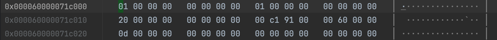

阅读 李成栋-从现代CPU 特性和编译的角度分析C++ 代码优化
-
示例代码：
void compute(int *input, int *output){ if(*input > 10) *output = 1; if(*input > 5) *output *= 2; } # include <stdio.h> int main(int args, char **argv){ int i = 20; int o = 0; for(int j = 0; j < 800000000; j++){ compute(&i, &o); } printf("out = %d\n", o); } -
ASM
compute: mov eax, dword ptr [rdi] cmp eax, 11 jge .LBB0_1 cmp eax, 6 jge .LBB0_3 .LBB0_4: ret .LBB0_1: mov dword ptr [rsi], 1 mov eax, dword ptr [rdi] cmp eax, 6 jl .LBB0_4 .LBB0_3: shl dword ptr [rsi] ret
对比
- 在同一个模块中，直接内连优化。循环被消除掉了，直接产生结果。
- 在不同模块中，除非使用 LTO，否则无法进行内联优化。
对比：
- rust 在 inline 方面更为激进
- rust 在 alias 方面更有利于优化。
- likely 导致分支预测，性能偏差约 25%。
#![feature(core_intrinsics)]
#[inline(never)]
unsafe fn compute(input: &i32, output: &mut i32) {
if std::intrinsics::unlikely(*input > 10) {
*output = 1;
}
if *input > 5 {
*output *= 2;
}
}
pub fn main(){
let i = 20i32;
let mut o = 0i32;
let mut j = 0u32;
while j < 1_000_000_000u32 {
unsafe { compute(&i, &mut o); }
j += 1;
}
println!("out = {}\n", o);
}- likely(0.76s) 版本相比 unlikely(1.26s) 版本，性能提升约 40%。
Prefaces
最近，阅读了 rust-under-the-hood一书，从生成的汇编代码来理解 Rust 语言，颇有一些收获：
- Rust 语言编译后的汇编代码，在很多方面的优化，是令人惊讶的。例如，对于 vector 的函数式操作，与 for 循环等相比，生成的代码是等效的，这 既享受了语法上的优雅简洁（如Scala），又享受了性能的优势（而这是 scala 等望尘莫及的）
- SIMD 指令集的使用，让应用代码可以更好的利用 CPU 的并行计算能力。
加之，最近在阅读 DuckDB 的源代码，也对向量计算非常的感兴趣，写这个系列，是想进一步的实践、研究 向量相关的编译优化技术，为后续的一些性能 优化工作做些筹备。
- 哪些场景 适合于 compiler vectorization？
- 使用 portable simd 库来编写处理向量的代码？是否会有更好的性能提升？
tips
- 查看 HIR 代码：
cargo rustc --release -- -Zunpretty=hir - 查看 MIR 代码：
cargo rustc --release -- -Zunpretty=mir - 查看 LLVM IR 代码：
cargo rustc --release -- --emit llvm-ir，生成的文件在target/release/deps/目录下。 - 查看 ASM 代码：
cargo rustc --release -- --emit asm -C llvm-args=-x86-asm-syntax=intel，生成 intel 风格的汇编代码 (move dest src) - 编译选项：
-C target-cpu=native，生成针对当前 CPU 的优化代码。 - 编译选项：
-C target-feature=+avx2，生成针对 AVX2 指令集的优化代码。 - 编译选项：
-C target-feature=+avx512f,+popcnt，生成针对 AVX512 + popcnt 指令集的优化代码。 - 交叉编译
--target x86_64-apple-darwin在 M1 下编译生成 x86_64 的代码。 - 对有的 cargo 命令，如 cargo bench，可以使用 RUSTFLAGS 环境变量传递
compiler vectorization
本篇分析一下 rust 语言的编译期自动向量化的特性。
#![allow(unused)]
fn main() {
#[inline(never)]
pub fn select(v1: &[i32], v2: &[i32], result: &mut [bool]) {
assert!(v1.len() == v2.len() && v1.len() == result.len());
for i in 0..v1.len() {
if v1[i] > v2[i] {
result[i] = true
} else {
result[i] = false
}
}
}
}- %rdi : %rsi v1.ptr() : v1.len()
- %rdx : %rcx v2.ptr() : v2.len()
- %r8 : %r9 result.ptr() : result.len()
LCPI6_0:
.quad 72340172838076673 -- 0x01010101_01010101 // 8 个 1
.section __TEXT,__text,regular,pure_instructions
.p2align 4, 0x90
__ZN5l_asm5demo16select17h43db37ec056aed21E:
.cfi_startproc
cmp rsi, rcx -- v1.len() == v2.len()
jne LBB6_10
cmp rsi, r9 -- v1.len() == result.len()
jne LBB6_10
test rsi, rsi -- v1.len() == 0
je LBB6_9
cmp rsi, 32 -- v1.len() >= 32
jae LBB6_5
xor eax, eax
jmp LBB6_8 -- 少于32时，直接循环处理
LBB6_5:
mov rax, rsi
and rax, -32 -- rax = rsi & -32
xor ecx, ecx
vpbroadcastq ymm0, qword ptr [rip + LCPI6_0] -- ymm0: 32x8
.p2align 4, 0x90
LBB6_6:
vmovdqu ymm1, ymmword ptr [rdi + 4*rcx] -- ymm1..ymm4 加载 32 个 i32 from v1
vmovdqu ymm2, ymmword ptr [rdi + 4*rcx + 32]
vmovdqu ymm3, ymmword ptr [rdi + 4*rcx + 64]
vmovdqu ymm4, ymmword ptr [rdi + 4*rcx + 96]
vpcmpgtd ymm1, ymm1, ymmword ptr [rdx + 4*rcx]
-- ymm1:8x32 = [ c0, c1, ..., c7 ]
vpcmpgtd ymm2, ymm2, ymmword ptr [rdx + 4*rcx + 32]
-- ymm2:8x32 = [ c8, c9, ..., c15]
vpcmpgtd ymm3, ymm3, ymmword ptr [rdx + 4*rcx + 64]
-- ymm3: 8x32 = [ c16, c17, ..., c23]
vpackssdw ymm1, ymm1, ymm2
-- ymm1: 16x16 = [ c0, c1, ..., c15]
vpcmpgtd ymm2, ymm4, ymmword ptr [rdx + 4*rcx + 96]
vpackssdw ymm2, ymm3, ymm2 -- ym2 = 16..31, 【i16, 16]
-- ymm2: 16x16 = [c16, c17, ..., c31]
vpermq ymm2, ymm2, 216 -- 0b11_01_10_00
-- ymm2: 16x16 = [ c16, c17, c18, c19, c24, c25, c26, c27, c20, c21, c22, c23, c28, c29, c30, c31]
-- vpermq 分析有些问题
vpermq ymm1, ymm1, 216
-- ymm1: 16x16 = [ c0, c1, c2, c3, c8, c9, c10, c11, c4, c5, c6, c7, c12, c13, c14, c15]
vpacksswb ymm1, ymm1, ymm2
-- ymm1: 32x8 = [ c0, c1, c2, c3 , c8, c9, c10, c11, c4, c5, c6, c7, c12, c13, c14, c15,
c16, c17, c18, c19, c24, c25, c26, c27, c20, c21, c22, c23, c28, c29, c30, c31] -- 32x8
vpermq ymm1, ymm1, 216
-- ymm1: 32x8 = [ c0, c1, c2, c3, c8, c9, c10, c11, c16, c17, c18, c19, c24, c25, c26, c27,
.......]
vpand ymm1, ymm1, ymm0
vmovdqu ymmword ptr [r8 + rcx], ymm1
add rcx, 32 -- 一次循环处理完32个整数
cmp rax, rcx
jne LBB6_6
cmp rax, rsi
je LBB6_9
.p2align 4, 0x90
LBB6_8:
mov ecx, dword ptr [rdi + 4*rax]
cmp ecx, dword ptr [rdx + 4*rax]
setg byte ptr [r8 + rax]
lea rcx, [rax + 1]
mov rax, rcx
cmp rsi, rcx
jne LBB6_8
LBB6_9:
vzeroupper
ret
LBB6_10:
push rbp
.cfi_def_cfa_offset 16
.cfi_offset rbp, -16
mov rbp, rsp
.cfi_def_cfa_register rbp
lea rdi, [rip + l___unnamed_3]
lea rdx, [rip + l___unnamed_4]
mov esi, 66
call __ZN4core9panicking5panic17h2a3e12572053020cE
.cfi_endproc
从这段代码来看，在 +avx2 特性下，编译期生成了使用 256 bit 寄存器的代码，一次循环可以处理 32 个 i32 数据。 而如果在 +avx512f 特性下，编译期生成了使用 512bit 的代码， 一次循环可以处理 64 个 i32 数据。 实际性能如何？需要找一台支持 AVX512 指令集的机器来做一下测试。
调整
- 修改为 i32 与 i16 的比较:
在 +avx2 特性下，可以使用 vpmovsxwd 指令在读取 v2 的数据时，一次将 8 个 i16 读取并转换为 8 个 i32，然后再进行比较。#![allow(unused)] fn main() { use std::simd::i8x1; #[inline(never)] pub fn select(v1: &[i32], v2: &[i16], result: &mut [bool]) { assert!(v1.len() == v2.len() && v1.len() == result.len()); for i in 0..v1.len() { if v1[i] > (v2[i] as i32) { result[i] = true } else { result[i] = false } } } } - 修改
v1[i]为一个v1.get(i)时，生成代码？
此时，load 数据这一块可能会无法使用 SIMD 指令集，可能需要多次获取数据后，再拼装为一个 SIMD 寄存器。 - 在 OLAP 向量计算中，如果采用代码生成的方式，相比解释表达式，并分派给多个模版方法，肯定会有性能上的提升：
- 多个运算间，可以复用寄存器
- 是否可以采用 LLVM 来做这个的代码生成？
- 尝试阅读 LLVM IR 代码，评估后续通过生成 LLVM IR 的方式来执行的可能行。
LLVM-IR 阅读
; l_asm::demo1::select
; Function Attrs: noinline uwtable
define internal fastcc void @_ZN5l_asm5demo16select17h43db37ec056aed21E(
ptr noalias nocapture noundef nonnull readonly align 4 %v1.0, i64 noundef %v1.1,
ptr noalias nocapture noundef nonnull readonly align 4 %v2.0, i64 noundef %v2.1,
ptr noalias nocapture noundef nonnull writeonly align 1 %result.0, i64 noundef %result.1) unnamed_addr #0 {
start:
%_4 = icmp eq i64 %v1.1, %v2.1
%_7 = icmp eq i64 %v1.1, %result.1
%or.cond = and i1 %_4, %_7 -- i1: bit
br i1 %or.cond, label %bb5.preheader.split, label %bb4 -- br type iftrue ifalse
bb5.preheader.split: ; preds = %start
%_218.not = icmp eq i64 %v1.1, 0
br i1 %_218.not, label %bb15, label %bb13.preheader
bb13.preheader: ; preds = %bb5.preheader.split
%min.iters.check = icmp ult i64 %v1.1, 32 -- unsigned less than
br i1 %min.iters.check, label %bb13.preheader17, label %vector.ph
vector.ph: ; preds = %bb13.preheader
%n.vec = and i64 %v1.1, -32
br label %vector.body
vector.body: ; preds = %vector.body, %vector.ph
%index = phi i64 [ 0, %vector.ph ], [ %index.next, %vector.body ] -- TODO? what is phi
%0 = getelementptr inbounds [0 x i32], ptr %v1.0, i64 0, i64 %index -- %0 = %v1.0
%1 = getelementptr inbounds i32, ptr %0, i64 8 -- %1 = %0 + 32byte
%2 = getelementptr inbounds i32, ptr %0, i64 16
%3 = getelementptr inbounds i32, ptr %0, i64 24
%wide.load = load <8 x i32>, ptr %0, align 4 -- 8x32 from v1
%wide.load10 = load <8 x i32>, ptr %1, align 4
%wide.load11 = load <8 x i32>, ptr %2, align 4
%wide.load12 = load <8 x i32>, ptr %3, align 4
%4 = getelementptr inbounds [0 x i32], ptr %v2.0, i64 0, i64 %index
%5 = getelementptr inbounds i32, ptr %4, i64 8
%6 = getelementptr inbounds i32, ptr %4, i64 16
%7 = getelementptr inbounds i32, ptr %4, i64 24
%wide.load13 = load <8 x i32>, ptr %4, align 4 -- 8x32 from v1
%wide.load14 = load <8 x i32>, ptr %5, align 4
%wide.load15 = load <8 x i32>, ptr %6, align 4
%wide.load16 = load <8 x i32>, ptr %7, align 4
%8 = icmp sgt <8 x i32> %wide.load, %wide.load13 -- signed greater than
%9 = icmp sgt <8 x i32> %wide.load10, %wide.load14
%10 = icmp sgt <8 x i32> %wide.load11, %wide.load15
%11 = icmp sgt <8 x i32> %wide.load12, %wide.load16
%12 = zext <8 x i1> %8 to <8 x i8> -- zero extend 8x1 to 8x8
%13 = zext <8 x i1> %9 to <8 x i8>
%14 = zext <8 x i1> %10 to <8 x i8>
%15 = zext <8 x i1> %11 to <8 x i8>
%16 = getelementptr inbounds [0 x i8], ptr %result.0, i64 0, i64 %index
%17 = getelementptr inbounds i8, ptr %16, i64 8
%18 = getelementptr inbounds i8, ptr %16, i64 16
%19 = getelementptr inbounds i8, ptr %16, i64 24
store <8 x i8> %12, ptr %16, align 1 -- store 8x8 to result
store <8 x i8> %13, ptr %17, align 1
store <8 x i8> %14, ptr %18, align 1
store <8 x i8> %15, ptr %19, align 1
%index.next = add nuw i64 %index, 32
%20 = icmp eq i64 %index.next, %n.vec
br i1 %20, label %middle.block, label %vector.body, !llvm.loop !17 -- TODO what's !llvm.loop !17
middle.block: ; preds = %vector.body
%cmp.n = icmp eq i64 %n.vec, %v1.1
br i1 %cmp.n, label %bb15, label %bb13.preheader17
bb13.preheader17: ; preds = %bb13.preheader, %middle.block
%iter.sroa.0.09.ph = phi i64 [ 0, %bb13.preheader ], [ %n.vec, %middle.block ]
br label %bb13
bb4: ; preds = %start
; call core::panicking::panic
tail call void @_ZN4core9panicking5panic17h2a3e12572053020cE(ptr noalias noundef nonnull readonly align 1 @alloc_882a6b32f40210455571ae125dfbea95, i64 noundef 66, ptr noalias noundef nonnull readonly align 8 dereferenceable(24) @alloc_649ca88820fbe63b563e38f24e967ee7) #12
unreachable
bb15: ; preds = %bb13, %middle.block, %bb5.preheader.split
ret void
bb13: ; preds = %bb13.preheader17, %bb13
%iter.sroa.0.09 = phi i64 [ %_0.i, %bb13 ], [ %iter.sroa.0.09.ph, %bb13.preheader17 ]
%_0.i = add nuw i64 %iter.sroa.0.09, 1
%21 = getelementptr inbounds [0 x i32], ptr %v1.0, i64 0, i64 %iter.sroa.0.09
%_13 = load i32, ptr %21, align 4, !noundef !4
%22 = getelementptr inbounds [0 x i32], ptr %v2.0, i64 0, i64 %iter.sroa.0.09
%_15 = load i32, ptr %22, align 4, !noundef !4
%_12 = icmp sgt i32 %_13, %_15
%spec.select = zext i1 %_12 to i8
%23 = getelementptr inbounds [0 x i8], ptr %result.0, i64 0, i64 %iter.sroa.0.09
store i8 %spec.select, ptr %23, align 1
%exitcond.not = icmp eq i64 %_0.i, %v1.1
br i1 %exitcond.not, label %bb15, label %bb13, !llvm.loop !20
}
对照 LLVM-IR 文档， 还是比较好理解的， 相比 x86 汇编，LLVM-IR 在 SIMD 上的可读性显然要高太多。如果理解了 LLVM-IR，并掌握了生成 LLVM-IR 后再通过 LLVM 生成机器码，然后再通过 JIT 的方式执行，那么，在 OLAP 中未尝 不是一种更好的替代模版特化的方式。
- 对于较为复杂的表达式，例如 a > b && c + d > e, 特化的方式，基本上每个运算符都是一次函数调用，这里是4次调用，且每次函数调用涉及到类型组合， 需要特化的函数版本会非常的多。
- 使用 LLVM-IR，这个表达式可以直接优化为 1个函数调用，然后通过 LLVM 优化器，生成最优的机器码。内部可能会减少不必要的 Load/Store 过程，减少 中间向量的生成和内存占用。
JIT 参考资料：
Rust Sugars
语法糖具有两面性：
- Pros: 语法糖可以让代码更加简洁，更加易读，更加易写。
- Cons: 语法糖会隐藏实现细节，而如果你并没有理解这些细节，那么可能会导致一些问题：即错误的使用，或者衍生的其他问题。
在这一点上，与抽象具有一定的相似性。
本文收集 Rust 语言的一些语法糖，以帮助加深对其的理解。
for 循环与 IntoIterator
#![allow(unused)]
fn main() {
for i in 0..10 {
println!("{}", i);
}
; 上面的代码等效于下面的代码
let iter = (0..10).into_iter();
while let Some(i) = iter.next() {
println!("{}", i);
}
}这里以 collection: Vec<T> 为例
-
for elem in collection这里的 elem 类型为collection.into_iter().Item, T。- collection 的所有权已经转移给了
into_iter。 - 遍历过程中，elem 的 所有权又从 iterator 转移给了 elem。
- 可以使用
for mut elem in collection来修饰 elem，这样 elem 就是可变的。
- collection 的所有权已经转移给了
-
for elem in &collection这里的 elem 类型为(&collection).iter().Item, 即 &T#![allow(unused)] fn main() { impl<'a, T, A: Allocator> IntoIterator for &'a Vec<T, A> { type Item = &'a T; type IntoIter = slice::Iter<'a, T>; fn into_iter(self) -> Self::IntoIter { self.iter() } } }- collection 的所有权没有转移
- iter 过程返回的也是引用，所以 elem 的所有权也没有转移。
-
for elem in &mut collection这里 elem 类型为(&mut collection).iter_mut().Item, 即 &mut T,#![allow(unused)] fn main() { impl<'a, T, A: Allocator> IntoIterator for &'a mut Vec<T, A> { type Item = &'a mut T; type IntoIter = slice::IterMut<'a, T>; fn into_iter(self) -> Self::IntoIter { self.iter_mut() } } }- collection 的所有权没有转移
- iter_mut 过程返回的是 &mut T 对于所有实现 IntoIterator 的类型 X，都需要参考上述的方式，来分别处理 X, &X, &mut X 的情况。或者根据实现情况，来选择支持其中某一种方式。
pattern matching
- literal
- range: 0..10, 0..=10, ‘a’..=‘z’, 0..
_- variable: x, mut x
- ref variable: ref x, ref mut x
- enum: Some(x), None, Ok(x), Err(x)
- tuple: (x, y), (x, y, z)
- array:
[x, y, z] - slice:
[x,y],[x, _, z],[x, ..., z],[] - struct:
Point { x, y },Point { x: 0, y: 0 } - 引用：
&x,&(k,v)
match 可能引起所有权的转移：
#![allow(unused)]
fn main() {
struct Point {
x: i32,
y: i32,
}
impl Drop for Point {
fn drop(&mut self) {
println!("Dropping Point({}, {})", self.x, self.y);
}
}
fn demo(guard: i32){
let p = Point{x:10, y:20};
{ // block1
match p {
v if v.x == guard => {} // p will moved to v
ref v => {} // p will not moved
}
}
println!("ok");
}
}- demo(10) 会打印：
Dropping Point(10, 20) ; // p moved to v, and v will be dropped after block1 ok - demo(100) 会打印：
ok Dropping Point(10, 20) // p will not moved, and will be dropped after demo
这里就涉及到条件转移，涉及到条件转移时，离开 block 时，都不能再使用 p，因为 p 的所有权可能已经转移了。
#![allow(unused)]
fn main() {
&point match {
Point{x, y} => {} // x: &i32, y: &i32
Point{x: ref x1, y: ref y1} => {} // x1: &i32, y1: &i32
&Point{x, y} => {} // x: i32, y: i32 & 用于从 &struct 中复制数据
// Point { x: &x1 , y: y1 } => { } // 编译错误
// &p2 => {} // cannot move out of a shared reference
}
&mut point match {
Point{x, y} => {} // x: &mut i32, y: &mut i32
Point{x: ref x1, y: ref y1} => {} // x1: &i32, y1: &i32
Point{x: ref mut x1, y: ref mut y1 } => { } // x1: &mut i32, y1: &mut i32
&mut Point {x, y } => { } // x: i32, y: i32
}
}Rust 的 pattern match 与 scala 的并不完全相同，scala中，是 unapply 的语法糖，但 rust 显然要复杂很多，都是内置在编译器中。
rust type system
1. case from arrow-array
#![allow(unused)]
fn main() {
pub struct PrimitiveArray<T: ArrowPrimitiveType> {
data_type: DataType,
/// Values data
values: ScalarBuffer<T::Native>,
nulls: Option<NullBuffer>,
}
pub trait ArrowPrimitiveType: primitive::PrimitiveTypeSealed + 'static {
type Native: ArrowNativeTypeOp;
const DATA_TYPE: DataType;
/// Returns the byte width of this primitive type.
#[deprecated(since = "52.0.0", note = "Use ArrowNativeType::get_byte_width")]
fn get_byte_width() -> usize {
std::mem::size_of::<Self::Native>()
}
/// Returns a default value of this primitive type.
///
/// This is useful for aggregate array ops like `sum()`, `mean()`.
fn default_value() -> Self::Native {
Default::default()
}
}
pub trait ArrowNativeTypeOp: ArrowNativeType {
const ZERO: Self;
const ONE: Self;
const MIN_TOTAL_ORDER: Self;
const MAX_TOTAL_ORDER: Self;
fn add_checked(self, rhs: Self) -> Result<Self, ArrowError>;
fn add_wrapping(self, rhs: Self) -> Self;
// ...
fn compare(self, rhs: Self) -> Ordering;
fn is_eq(self, rhs: Self) -> bool;
}
pub trait ArrowNativeType: Debug + Send + Sync + Copy + PartialOrd + Default + Sealed + 'static {
}
}在使用时：
#![allow(unused)]
fn main() {
fn test() {
let array: PrimitiveArray<Int32Type> = PrimitiveArray::<Int32Type>::from(vec![Some(1), None, Some(3)]);
let birthday: PrimitiveArray<Data32Type> = Date32Array::from(vec![10957, 10958, 10959]);
}
}我更期待的写法是：
#![allow(unused)]
fn main() {
fn test() {
let array = PrimitiveArray::<i32>::from(vec![1, None, 3]);
let birthday: PrimitiveArray<Data32> = Date32Array::from(vec![Date32::from(10957), Date32::from(10958), Date32::from(10959)]);
}
}是否可以使用 rust 的类型体系来实现这种写法？
#![allow(unused)]
fn main() {
struct PrimitiveArray<T: ArrowPrimityType> {
}
struct Date32 {
value: i32
}
impl ArrowPrimityType for i32 { /* ... */ }
impl ArrowPrimityType for f32 { /* ... */ }
impl ArrowPrimityType for Date32 { /* ... */ }
}- a type can having Self level values(const) and methods(fn)
- a type can having self level values(const) and methods(fn)
- a type can having type members. (associated type)
trait
unsafe? trait IDENTIFIER GenericParams? ( : TypeParamBounds? )? WhereClause? {
InnerAttribute*
AssociatedItem*
}
TypeParamBound: Lifetime | TraitBound | UseBound
Lifetime:
1. T: 'static， T 的所有生命周期参数都是 'static
2. T: 'a, T 的所有生命周期参数都是 'a (或者更长)
3. T: '_， 是一个compiler推断的生成周期。
example:
#![allow(unused)]
fn main() {
fn capture<'a, 'b, T>(x: &'a (), y: T) -> impl Sized + use<'a, T> {
// ~~~~~~~~~~~~~~~~~~~~~~~
// Captures `'a` and `T` only.
(x, y)
}
impl<'a, T> Trait<'a, T> for &'a T {}
fn call_on_ref_zero<F>(f: F) where for<'a> F: Fn(&'a i32) {
let zero = 0;
f(&zero);
}
impl<'a> PartialEq<i32> for &'a T {
// ...
}
}测试 unsafe cast
1. unsafe cast
fn main(){
let i = 10u32;
let p1 = &i as *const u32 as usize;
// let p2 = do1(p1); // OK
// let p2: &mut u32 = unsafe { &mut *(p1 as *mut u32) }; // error: casting &T to &mut T is UB
let p2: &mut u32 = unsafe { &mut *((p1+0) as *mut u32) }; // OK
*p2 = 20; // change immutable i, so it is UB
println!("p1 = {}", p1);
println!("i = {}, p2 = {:?}", i, p2);
}
fn do1(p1: usize) -> &'static mut u32{
unsafe { &mut *(p1 as *mut u32) }
} - 简单的
unsafe { &mut *(&i as *const u32 as uszie as *mut u32) }会被编译器检查 （实际上这里应该是 warning 而不是 error,因为本来就是 unsafe） - 进行变换后可以绕过编译器检查。
- 封装成一次函数调用
- 加上偏移量
- Rust 中的 raw pointer 自身没有生命周期。
Return Position Impl Trait
example 1
#![allow(unused)]
fn main() {
fn apply<F>(f: F)
where
F: Fn(&str),
{
let s = String::from("hello");
f(&s);
}
}Rc Layout
#![allow(unused)]
fn main() {
let mut string = String::with_capacity(32); // sizeof::<String> = 24
string.push_str("Hello World! ");
let str1 = Rc::new(string); // sizeof::<RcInner<String>> = 40
// memory: strong: 1, weak: 1
assert_eq!(Rc::strong_count(&str1), 1);
assert_eq!(Rc::weak_count(&str1), 0);
let p1 = *(unsafe { &*(&str1 as *const Rc<_> as *const *const ()) }); // for debug the memory
println!("str1 = {:p}", p1);
let str2 = Rc::clone(&str1);
// memory: strong:2 weak: 1
assert_eq!(Rc::strong_count(&str2), 2);
assert_eq!(Rc::weak_count(&str2), 0);
let str3 = Rc::downgrade(&str2);
// memory: strong:2 weak: 2
assert_eq!(Rc::strong_count(&str1), 2);
assert_eq!(Rc::weak_count(&str1), 1);
drop(str1);
// memory: strong = 1, weak = 2
drop(str2);
// memory: strong = 0, weak = 1, the value is dropped in place
drop(str3);
// memory: strong = 0, weak = 0, the RcInner is dropped
println!("completed");
}查看 p1 指向的内存：
#![allow(unused)]
fn main() {
struct Rc<T> {
ptr: NonNull<RcInner<T>>
}
struct RcInner {
strong: usize,
weak: usize,
value: T; // Here value: String
}
struct String {
vec: Vec<u8>
}
struct Vec<u8> {
buf: RawVec<u8>,
len: usize
}
struct RawVec<u8> {
inner: RawVecInner<u8>
}
struct RawVecInner {
ptr: Unique<u8>,
cap: usize
}
---
struct RcInner<String> { -- total: 40 bytes
strong: usize, // init:1, Rc +1,
weak: usize, // init:1 Weak +1
value: struct { -- total 24 bytes
buf: {
ptr: Unique<u8>
cap: usize,
}
len: usize
}
}
}

#![allow(unused)]
fn main() {
struct RcInner<String> {
strong: usize, // 1
weak: usize, // 1
value.buf.ptr: 0x60000091c100,
value.buf.cap: 0x20,
value.len: 0x0d
}
}增加一个 Rc.clone() 
增加一个 Weak 引用：

结论：
- 当 strong_count 为 0 时， RcInner.value 可以被 drop_in_place，即释放掉 String.ptr 所在 的内存。在这个例子中，释放掉 32个字节的内存（String.cap）,但 RcInner 自身占用的 40 字节不被释放
- 当 weak_count 也为 0 时，RcInner 的内存也得以释放。
- Rc::new 时 strong = 1, weak = 1( Rc::weak_count() == weak - 1)
- Rc::clone 时 strong += 1, Rc::drop 时 strong -= 1
- 新建一个 Weak 时 weak += 1, Weak::drop 时 weak - = 1
simd-1
这个例子摘自实验项目
#![allow(unused)]
fn main() {
#[inline(never)]
fn aggregate_data(orders: &Orders) -> (f64, u32) {
let mut total_amount = 0.0;
let mut count = 0;
for i in 0..orders.order_id.len() {
total_amount += orders.amount[i];
count += 1;
}
(total_amount, count)
}
// 1G 数据，耗时 260ms
#[inline(never)]
fn aggregate_data_simd(orders: &Orders) -> (f64, u32) {
let mut total_amount = 0.0;
let mut count = 0;
let length = orders.order_id.len() & (!0x0F); // 16 is better than 32, same as 8
for i in (0..length).step_by(16) {
let amount= f64x16::from_slice(&orders.amount[i..]);
let zero = f64x16::splat(0.0);
total_amount += amount.reduce_sum(); // x86 上 reduce_sum 不支持向量化，还是多次累加
count += amount.simd_ne(zero).to_bitmask().count_ones(); // x86 有 popcnt 指令
}
for i in length..orders.order_id.len() {
total_amount += orders.amount[i];
count += 1;
}
(total_amount, count)
}
#[inline(never)]
fn aggregate_data_simd2(orders: &Orders) -> (f64, u32) {
let mut total_amount = 0.0;
let mut count = 0;
let length = orders.order_id.len() & (!0x0F); // 16 is better than 32, same as 8
let mut aggr1 = f64x16::splat(0.0);
// let mut aggr2 = f64x16::splat(0.0);
let zero = f64x16::splat(0.0);
for i in (0..length).step_by(16) {
let amount1= f64x16::from_slice(&orders.amount[i..]);
// let amount2= f64x16::from_slice(&orders.amount[i+16 ..]);
aggr1 = aggr1 + amount1;
// aggr2 = aggr2 + amount2;
count += amount1.simd_ne(zero).to_bitmask().count_ones(); // x86 有 popcnt 指令
// count += amount2.simd_ne(zero).to_bitmask().count_ones(); // x86 有 popcnt 指令
}
total_amount = aggr1.reduce_sum() ;
for i in length..orders.order_id.len() {
total_amount += orders.amount[i];
count += 1;
}
(total_amount, count)
}
}分别运行 1B(10亿) 的数据，耗时如下：
- aggregate_data 947ms （0.9ns/iter)
- aggregate_data_simd 260ms
- aggregate_data_simd2 160ms
x86_64 查看生成的汇编代码：
- aggregate_data 进行了循环展开，一次循环处理了 4个 f64 数据，但没有使用 SIMD 指令。
LBB24_10: vmovsd xmm2, qword ptr [rdx + 8*rsi] vmovsd xmm3, qword ptr [rdx + 8*rsi + 8] vaddsd xmm0, xmm0, xmm2 // xmm0 += amount[i] vcmpneqsd k0, xmm1, xmm2 kmovw edi, k0 add edi, eax // edi = count + (amount[i] != 0) vaddsd xmm0, xmm0, xmm3 // xmm0 += amount[i+1] vcmpneqsd k0, xmm1, xmm3 kmovw eax, k0 vmovsd xmm2, qword ptr [rdx + 8*rsi + 16] vaddsd xmm0, xmm0, xmm2 // xmm0 += amount[i+2] vcmpneqsd k0, xmm1, xmm2 kmovw r9d, k0 // add r9d, eax // r9d = (amount[i+1] != 0) + (amount[i+2] != 0) add r9d, edi // r9d = count + (amount[i] != 0) + (amount[i+1] != 0) + (amount[i+2] != 0) vmovsd xmm2, qword ptr [rdx + 8*rsi + 24] add rsi, 4 vaddsd xmm0, xmm0, xmm2 // xmm0 += amount[i+3] vcmpneqsd k0, xmm1, xmm2 kmovw eax, k0 add eax, r9d // count += (amount[i+3] != 0) cmp r8, rsi jne LBB24_10- 进行了循环展开，一次循环处理了 4个 f64 数据
- 没有使用 SIMD 指令
- 上述指令具有一定的并行性。IPC > 1
- aggregate_data_simd 显示在一次循环中处理 16个 f64 数据
开启 avx512f 指令集，以及 popcnt 特性，生成的代码如下：
LBB25_8: cmp rcx, rsi ja LBB25_12 cmp r10, 15 jbe LBB25_13 dec r8 vaddsd xmm3, xmm1, qword ptr [r9 + 8*rcx] vaddsd xmm3, xmm3, qword ptr [r9 + 8*rcx + 8] vaddsd xmm3, xmm3, qword ptr [r9 + 8*rcx + 16] vaddsd xmm3, xmm3, qword ptr [r9 + 8*rcx + 24] vaddsd xmm3, xmm3, qword ptr [r9 + 8*rcx + 32] vaddsd xmm3, xmm3, qword ptr [r9 + 8*rcx + 40] vaddsd xmm3, xmm3, qword ptr [r9 + 8*rcx + 48] vaddsd xmm3, xmm3, qword ptr [r9 + 8*rcx + 56] vaddsd xmm3, xmm3, qword ptr [r9 + 8*rcx + 64] vaddsd xmm3, xmm3, qword ptr [r9 + 8*rcx + 72] vaddsd xmm3, xmm3, qword ptr [r9 + 8*rcx + 80] vaddsd xmm3, xmm3, qword ptr [r9 + 8*rcx + 88] vaddsd xmm3, xmm3, qword ptr [r9 + 8*rcx + 96] vaddsd xmm3, xmm3, qword ptr [r9 + 8*rcx + 104] vaddsd xmm3, xmm3, qword ptr [r9 + 8*rcx + 112] vaddsd xmm3, xmm3, qword ptr [r9 + 8*rcx + 120] ; xmm3 = amount[i] + amount[i+1] + ... + amount[i+15] vcmpneqpd k0, zmm2, zmmword ptr [r9 + 8*rcx] vcmpneqpd k1, zmm2, zmmword ptr [r9 + 8*rcx + 64] vaddsd xmm0, xmm0, xmm3 kunpckbw k0, k1, k0 kmovw r11d, k0 popcnt r11d, r11d ; r11d = popcnt(k0) add eax, r11d add r10, -16 add rcx, 16 test r8, r8 jne LBB25_8- f64 加法没有利用到 SIMD 指令
- count 计算使用到 zmm 寄存器进行 SIMD 比较。
- 使用了 popcnt 指令来计算 count
- aggregate_data_simd2
LBB26_8: cmp rcx, rsi ja LBB26_12 cmp r10, 15 jbe LBB26_13 dec r8 vmovupd zmm3, zmmword ptr [r9 + 8*rcx] vmovupd zmm4, zmmword ptr [r9 + 8*rcx + 64] vaddpd zmm0, zmm0, zmm4 vaddpd zmm1, zmm1, zmm3 vcmpneqpd k0, zmm3, zmm2 vcmpneqpd k1, zmm4, zmm2 kunpckbw k0, k1, k0 kmovw r11d, k0 popcnt r11d, r11d add eax, r11d add r10, -16 add rcx, 16 test r8, r8 jne LBB26_8- 加法充分使用到 SIMD 指令
- count 充分利用 popcnt 指令
ARM64 查看生成的汇编代码：
-
aggregate_data
-
aggregate_data_simd
-
aggregate_data_simd2
; x11: &orders.amount[i..] ; x8: i ; x12: orders.order_id.len() - i ; x9: 循环次数 ; aggr1: f64x16 = v18, v23, v22, v20, v21, v19, v17, v0 ; count_aggr: i64x16 = v3, v4, v2, v1, v6, v5, v16, v7 LBB26_3: cmp x8, x1 b.hi LBB26_14 cmp x12, #15 b.ls LBB26_15 ldp q25, q24, [x11, #64] ; q24, q25, q26, q27, q28, q29, q30, q31: amount1: f64x16 ldp q27, q26, [x11, #32] ldp q28, q29, [x11] fadd.2d v23, v23, v29 ; v23, v18, v22, v20, v21, v19, v17, v0 aggr1: f64x16 fadd.2d v18, v18, v28 fadd.2d v22, v22, v27 fadd.2d v20, v20, v26 fadd.2d v21, v21, v25 fadd.2d v19, v19, v24 ldp q31, q30, [x11, #96] ; 这条指令是否可以提前，以便更好的利用流水线？ fadd.2d v17, v17, v31 fadd.2d v0, v0, v30 fcmeq.2d v30, v30, #0.0 mvn.16b v30, v30。 ； v30, v31, v24, v25, v28, v29, v27, v26: amount1.simd_ne(zero) fcmeq.2d v31, v31, #0.0 mvn.16b v31, v31 fcmeq.2d v24, v24, #0.0 mvn.16b v24, v24 fcmeq.2d v25, v25, #0.0 mvn.16b v25, v25 fcmeq.2d v28, v28, #0.0 mvn.16b v28, v28 fcmeq.2d v29, v29, #0.0 mvn.16b v29, v29 fcmeq.2d v27, v27, #0.0 mvn.16b v27, v27 fcmeq.2d v26, v26, #0.0 mvn.16b v26, v26 sub.2d v3, v3, v26 ; v3, v4, v2, v1, v6, v5, v16, v7: count_aggr += amount1.simd_ne(zero) sub.2d v4, v4, v27 sub.2d v2, v2, v29 sub.2d v1, v1, v28 sub.2d v6, v6, v25 sub.2d v5, v5, v24 add x11, x11, #128 ; x11: &orders.amount, x12 sub x12, x12, #16 sub.2d v16, v16, v31 add x8, x8, #16 ; x8, x9 sub.2d v7, v7, v30 sub x9, x9, #1 cbnz x9, LBB26_3对应的 LLVM-IR 代码如下：
; vector_example1::aggregate_data_simd2 ; Function Attrs: noinline uwtable define internal fastcc { double, i32 } @_ZN15vector_example120aggregate_data_simd217hf7a44556b264af6cE(ptr noalias nocapture noundef readonly align 8 dereferenceable(72) %orders) unnamed_addr #2 personality ptr @rust_eh_personality { start: %_73 = alloca [48 x i8], align 8 %0 = getelementptr inbounds i8, ptr %orders, i64 16 ; &orders.order_id.len %order_id_len = load i64, ptr %0, align 8, !noundef !3 ; orders.order_id.len %length16 = and i64 %order_id_len, -16 ; %length16 = orders.order_id.len & !0x0F %_57.not34 = icmp ult i64 %order_id_len, 16 ; orders.order_id.len < 16 br i1 %_57.not34, label %bb12, label %bb11.lr.ph bb11.lr.ph: ; preds = %start %d.i.i23 = lshr i64 %order_id_len, 4 %1 = getelementptr inbounds i8, ptr %orders, i64 64 ; &orders.total_amount.len %total_amount_len = load i64, ptr %1, align 8, !noundef !3 %2 = getelementptr inbounds i8, ptr %orders, i64 56 ; &order.total_amount.ptr %total_amount_ptr = load ptr, ptr %2, align 8, !nonnull !3 br label %bb11 bb12: ; preds = %simd_block, %start ; orders.order_id.len < 16 %count_aggr.sroa.0.0.lcssa = phi <16 x i64> [ zeroinitializer, %start ], [ %50, %simd_block ] %aggr1.sroa.0.0.lcssa = phi <16 x double> [ zeroinitializer, %start ], [ %47, %simd_block ] %3 = tail call double @llvm.vector.reduce.fadd.v16f64(double 0.000000e+00, <16 x double> %aggr1.sroa.0.0.lcssa) ; total_amount %4 = tail call i64 @llvm.vector.reduce.add.v16i64(<16 x i64> %count_aggr.sroa.0.0.lcssa) %5 = trunc i64 %4 to i32 ; count %_9640.not = icmp eq i64 %length16, %order_id_len br i1 %_9640.not, label %bb29, label %bb27.lr.ph bb27.lr.ph: ; preds = %bb12 ; remaining > 0 %6 = getelementptr inbounds i8, ptr %orders, i64 64 %_100 = load i64, ptr %6, align 8, !noundef !3 %7 = getelementptr inbounds i8, ptr %orders, i64 56 %_102 = load ptr, ptr %7, align 8, !nonnull !3 %8 = or disjoint i64 %length16, 1 %umax = tail call i64 @llvm.umax.i64(i64 %order_id_len, i64 %8) %9 = xor i64 %length16, -1 %10 = add i64 %umax, %9 %11 = tail call i64 @llvm.usub.sat.i64(i64 %_100, i64 %length16) %umin = tail call i64 @llvm.umin.i64(i64 %10, i64 %11) %12 = add i64 %umin, 1 %min.iters.check = icmp ult i64 %12, 17 br i1 %min.iters.check, label %bb27.preheader, label %vector.ph bb27.preheader: ; preds = %middle.block, %bb27.lr.ph %total_amount.sroa.0.043.ph = phi double [ %3, %bb27.lr.ph ], [ %35, %middle.block ] %count.sroa.0.042.ph = phi i32 [ %5, %bb27.lr.ph ], [ %37, %middle.block ] %iter.sroa.0.041.ph = phi i64 [ %length16, %bb27.lr.ph ], [ %ind.end, %middle.block ] br label %bb27 vector.ph: ; preds = %bb27.lr.ph %n.mod.vf = and i64 %12, 15 %13 = icmp eq i64 %n.mod.vf, 0 %14 = select i1 %13, i64 16, i64 %n.mod.vf %n.vec = sub i64 %12, %14 %ind.end = add i64 %length16, %n.vec %15 = insertelement <4 x i32> <i32 poison, i32 0, i32 0, i32 0>, i32 %5, i64 0 br label %unroll_16_body unroll_16_body: ; preds = %unroll_16_body, %vector.ph %index = phi i64 [ 0, %vector.ph ], [ %index.next, %unroll_16_body ] %vec.phi = phi double [ %3, %vector.ph ], [ %35, %unroll_16_body ] %vec.phi62 = phi <4 x i32> [ %15, %vector.ph ], [ %28, %unroll_16_body ] %vec.phi63 = phi <4 x i32> [ zeroinitializer, %vector.ph ], [ %29, %unroll_16_body ] %vec.phi64 = phi <4 x i32> [ zeroinitializer, %vector.ph ], [ %30, %unroll_16_body ] %vec.phi65 = phi <4 x i32> [ zeroinitializer, %vector.ph ], [ %31, %unroll_16_body ] %offset.idx = add i64 %length16, %index %16 = getelementptr inbounds [0 x double], ptr %_102, i64 0, i64 %offset.idx %17 = getelementptr inbounds i8, ptr %16, i64 32 %18 = getelementptr inbounds i8, ptr %16, i64 64 %19 = getelementptr inbounds i8, ptr %16, i64 96 %wide.load = load <4 x double>, ptr %16, align 8 %wide.load66 = load <4 x double>, ptr %17, align 8 %wide.load67 = load <4 x double>, ptr %18, align 8 %wide.load68 = load <4 x double>, ptr %19, align 8 %20 = fcmp une <4 x double> %wide.load, zeroinitializer %21 = fcmp une <4 x double> %wide.load66, zeroinitializer %22 = fcmp une <4 x double> %wide.load67, zeroinitializer %23 = fcmp une <4 x double> %wide.load68, zeroinitializer %24 = zext <4 x i1> %20 to <4 x i32> %25 = zext <4 x i1> %21 to <4 x i32> %26 = zext <4 x i1> %22 to <4 x i32> %27 = zext <4 x i1> %23 to <4 x i32> %28 = add <4 x i32> %vec.phi62, %24 %29 = add <4 x i32> %vec.phi63, %25 %30 = add <4 x i32> %vec.phi64, %26 %31 = add <4 x i32> %vec.phi65, %27 %32 = tail call double @llvm.vector.reduce.fadd.v4f64(double %vec.phi, <4 x double> %wide.load) %33 = tail call double @llvm.vector.reduce.fadd.v4f64(double %32, <4 x double> %wide.load66) %34 = tail call double @llvm.vector.reduce.fadd.v4f64(double %33, <4 x double> %wide.load67) %35 = tail call double @llvm.vector.reduce.fadd.v4f64(double %34, <4 x double> %wide.load68) %index.next = add nuw i64 %index, 16 %36 = icmp eq i64 %index.next, %n.vec br i1 %36, label %middle.block, label %unroll_16_body, !llvm.loop !824 middle.block: ; preds = %unroll_16_body %bin.rdx = add <4 x i32> %29, %28 %bin.rdx69 = add <4 x i32> %30, %bin.rdx %bin.rdx70 = add <4 x i32> %31, %bin.rdx69 %37 = tail call i32 @llvm.vector.reduce.add.v4i32(<4 x i32> %bin.rdx70) br label %bb27.preheader bb11: ; preds = %bb11.lr.ph, %simd_block %aggr1.sroa.0.038 = phi <16 x double> [ zeroinitializer, %bb11.lr.ph ], [ %47, %simd_block ] %count_aggr.sroa.0.037 = phi <16 x i64> [ zeroinitializer, %bb11.lr.ph ], [ %50, %simd_block ] %iter2.sroa.0.036 = phi i64 [ %d.i.i23, %bb11.lr.ph ], [ %38, %simd_block ] %iter1.sroa.0.035 = phi i64 [ 0, %bb11.lr.ph ], [ %_59, %simd_block ] %_59 = add nuw i64 %iter1.sroa.0.035, 16 %38 = add nsw i64 %iter2.sroa.0.036, -1 %_66 = icmp ugt i64 %iter1.sroa.0.035, %total_amount_len br i1 %_66, label %bb14, label %bb15, !prof !45 bb29: ; preds = %unroll_1_body, %bb12 %count.sroa.0.0.lcssa = phi i32 [ %5, %bb12 ], [ %count.sroa.0.1, %unroll_1_body ] %total_amount.sroa.0.0.lcssa = phi double [ %3, %bb12 ], [ %41, %unroll_1_body ] %39 = insertvalue { double, i32 } poison, double %total_amount.sroa.0.0.lcssa, 0 %40 = insertvalue { double, i32 } %39, i32 %count.sroa.0.0.lcssa, 1 ret { double, i32 } %40 bb27: ; preds = %bb27.preheader, %unroll_1_body %total_amount.sroa.0.043 = phi double [ %41, %unroll_1_body ], [ %total_amount.sroa.0.043.ph, %bb27.preheader ] %count.sroa.0.042 = phi i32 [ %count.sroa.0.1, %unroll_1_body ], [ %count.sroa.0.042.ph, %bb27.preheader ] %iter.sroa.0.041 = phi i64 [ %_0.i, %unroll_1_body ], [ %iter.sroa.0.041.ph, %bb27.preheader ] %_105 = icmp ult i64 %iter.sroa.0.041, %_100 br i1 %_105, label %unroll_1_body, label %panic unroll_1_body: ; preds = %bb27 %_0.i = add nuw i64 %iter.sroa.0.041, 1 %_28 = getelementptr inbounds [0 x double], ptr %_102, i64 0, i64 %iter.sroa.0.041 %_27 = load double, ptr %_28, align 8, !noundef !3 %41 = fadd double %total_amount.sroa.0.043, %_27 %_29 = fcmp une double %_27, 0.000000e+00 %42 = zext i1 %_29 to i32 %count.sroa.0.1 = add i32 %count.sroa.0.042, %42 %_96 = icmp ult i64 %_0.i, %order_id_len br i1 %_96, label %bb27, label %bb29, !llvm.loop !825 panic: ; preds = %bb27 ; call core::panicking::panic_bounds_check tail call void @_ZN4core9panicking18panic_bounds_check17h4e300ecacdcb485dE(i64 noundef %iter.sroa.0.041, i64 noundef %_100, ptr noalias noundef nonnull readonly align 8 dereferenceable(24) @alloc_1d64afd2f4d6487c2fc52f49f157fb70) #25 unreachable bb15: ; preds = %bb11 %_68 = sub nuw i64 %total_amount_len, %iter1.sroa.0.035 %_71 = icmp ugt i64 %_68, 15 br i1 %_71, label %simd_block, label %bb18, !prof !162 bb14: ; preds = %bb11 ; call core::slice::index::slice_start_index_len_fail tail call void @_ZN4core5slice5index26slice_start_index_len_fail17hc58130d6bde59316E(i64 noundef %iter1.sroa.0.035, i64 noundef %total_amount_len, ptr noalias noundef nonnull readonly align 8 dereferenceable(24) @alloc_a51f3018634c16dde71b5ca2d7634a49) #25 unreachable bb18: ; preds = %bb15 call void @llvm.lifetime.start.p0(i64 48, ptr nonnull %_73) store ptr @alloc_9050ad19dc66bd48e533c9ef9ae2a705, ptr %_73, align 8 %43 = getelementptr inbounds i8, ptr %_73, i64 8 store i64 1, ptr %43, align 8 %44 = getelementptr inbounds i8, ptr %_73, i64 32 store ptr null, ptr %44, align 8 %45 = getelementptr inbounds i8, ptr %_73, i64 16 store ptr inttoptr (i64 8 to ptr), ptr %45, align 8 %46 = getelementptr inbounds i8, ptr %_73, i64 24 store i64 0, ptr %46, align 8 ; call core::panicking::panic_fmt call void @_ZN4core9panicking9panic_fmt17hf449f69c28a45a63E(ptr noalias nocapture noundef nonnull readonly align 8 dereferenceable(48) %_73, ptr noalias noundef nonnull readonly align 8 dereferenceable(24) @alloc_aff0730a47fd28b03378033af17e580b) #25 unreachable simd_block: ; preds = %bb15 %_69 = getelementptr inbounds double, ptr %total_amount_ptr, i64 %iter1.sroa.0.035 %_77.sroa.0.0.copyload = load <16 x double>, ptr %_69, align 8 %47 = fadd <16 x double> %aggr1.sroa.0.038, %_77.sroa.0.0.copyload %48 = fcmp une <16 x double> %_77.sroa.0.0.copyload, zeroinitializer %49 = zext <16 x i1> %48 to <16 x i64> %50 = add <16 x i64> %count_aggr.sroa.0.037, %49 %_57.not = icmp eq i64 %38, 0 br i1 %_57.not, label %bb12, label %bb11 }对应的 CFG 如下：
%%
flowchart TD
start[MStart] -->|len < 16| bb12
start -->|len >= 16| bb11_lr_ph
bb11_lr_ph --> bb11
bb12 --> bb29
bb12 -->|has_remain| bb27_lr_ph
bb27_lr_ph --> bb27_preheader
bb27_lr_ph --> vector_ph
vector_ph --> unroll_16_body
bb27_preheader --> bb27
unroll_16_body --> middle_block
middle_block --> bb27_preheader
unroll_16_body --> unroll_16_body
bb11 -->|&orders.amount i.. 越界| bb14
bb11 --> bb15
bb29 --> END[End]
bb27 --> unroll_1_body
bb27 --> panic --> unreachable[Unreachable]
unroll_1_body --> bb27
unroll_1_body --> bb29
bb15 --> simd_block
bb15 --> bb18 --> unreachable
bb14 --> unreachable
simd_block --> bb12
simd_block --> bb11

- 阅读 LLVM-IR 代码，需要有一个 CFG 工具，以及可以对 变量， block 进行重命名的工具。
从一段简单的C代码来学习LLVM-IR
代码
int demo1(int x) {
int y = 0;
if(x == 1) {
y = 10;
}
else if(x == 100){
y = 20;
}
else if(x == 200){
y = 30;
}
else {
y = 40;
}
return y;
}
命令行工具
- 编译为 LLVM IR:
clang -S -emit-llvm demo1.c -o demo1.ll可结合-O1,-O3等优化选项。 - 使用
clang -c -mllvm -print-after-all demo1.c查看各个阶段的输出，查看各个pass后的 IR clang -mllvm --helpclang -mllvm --help-hidden查看隐藏的选项clang -mllvm -debug-pass=Argumentsprint pass arguments to pass to opt.
查看 -O3 的优化过程: `clang -S -emit-llvm -O3 -mllvm -print-after-all demo1.c
-
编译：
clang -S -emit-llvm -O3 -mllvm -print-after-all demo1.c -o demo1-O3.ll 2>/tmp/passes.txt -
grep "Dump After" /tmp/passes.txt | wc -l： 共 106 个 pass -
clang -mllvm -debug-pass=Arguments -c demo1.c查看 opt 的参数：Pass Arguments: -tti -targetlibinfo -assumption-cache-tracker -targetpassconfig -machinemoduleinfo -profile-summary-info -tbaa -scoped-noalias-aa \ -collector-metadata -machine-branch-prob -regalloc-evict -regalloc-priority -domtree -basic-aa -aa -objc-arc-contract -pre-isel-intrinsic-lowering \ -expand-large-div-rem -expand-large-fp-convert -atomic-expand -aarch64-sve-intrinsic-opts -simplifycfg -domtree -loops -loop-simplify \ -lazy-branch-prob -lazy-block-freq -opt-remark-emitter -scalar-evolution -loop-data-prefetch -aarch64-falkor-hwpf-fix -basic-aa \ -loop-simplify -canon-freeze -iv-users -loop-reduce -basic-aa -aa -mergeicmps -loops -lazy-branch-prob -lazy-block-freq -expand-memcmp \ -gc-lowering -shadow-stack-gc-lowering -lower-constant-intrinsics -lower-global-dtors -unreachableblockelim -domtree -loops -postdomtree \ -branch-prob -block-freq -consthoist -replace-with-veclib -partially-inline-libcalls -expandvp -post-inline-ee-instrument \ -scalarize-masked-mem-intrin -expand-reductions -loops -tlshoist -postdomtree -branch-prob -block-freq -lazy-branch-prob \ -lazy-block-freq -opt-remark-emitter -select-optimize -aarch64-globals-tagging -stack-safety -domtree -basic-aa -aa -aarch64-stack-tagging \ -complex-deinterleaving -aa -memoryssa -interleaved-load-combine -domtree -interleaved-access -aarch64-sme-abi -domtree -loops -type-promotion \ -codegenprepare -domtree -dwarf-eh-prepare -aarch64-promote-const -global-merge -callbrprepare -safe-stack -stack-protector -domtree -basic-aa \ -aa -loops -postdomtree -branch-prob -debug-ata -lazy-branch-prob -lazy-block-freq -aarch64-isel -finalize-isel -lazy-machine-block-freq \ -early-tailduplication -opt-phis -slotindexes -stack-coloring -localstackalloc -dead-mi-elimination -machinedomtree -aarch64-condopt \ -machine-loops -machine-trace-metrics -aarch64-ccmp -lazy-machine-block-freq -machine-combiner -aarch64-cond-br-tuning -machine-trace-metrics \ -early-ifcvt -aarch64-stp-suppress -aarch64-simdinstr-opt -aarch64-stack-tagging-pre-ra -machinedomtree -machine-loops -machine-block-freq \ -early-machinelicm -machinedomtree -machine-block-freq -machine-cse -machinepostdomtree -machine-cycles -machine-sink -peephole-opt \ -dead-mi-elimination -aarch64-mi-peephole-opt -aarch64-dead-defs -detect-dead-lanes -init-undef -processimpdefs -unreachable-mbb-elimination \ -livevars -phi-node-elimination -twoaddressinstruction -machinedomtree -slotindexes -liveintervals -register-coalescer -rename-independent-subregs \ -machine-scheduler -aarch64-post-coalescer-pass -machine-block-freq -livedebugvars -livestacks -virtregmap -liveregmatrix -edge-bundles \ -spill-code-placement -lazy-machine-block-freq -machine-opt-remark-emitter -greedy -virtregrewriter -regallocscoringpass -stack-slot-coloring \ -machine-cp -machinelicm -aarch64-copyelim -aarch64-a57-fp-load-balancing -removeredundantdebugvalues -fixup-statepoint-caller-saved \ -postra-machine-sink -machinedomtree -machine-loops -machine-block-freq -machinepostdomtree -lazy-machine-block-freq -machine-opt-remark-emitter \ -shrink-wrap -prologepilog -machine-latecleanup -branch-folder -lazy-machine-block-freq -tailduplication -machine-cp -postrapseudos \ -aarch64-expand-pseudo -aarch64-ldst-opt -kcfi -aarch64-speculation-hardening -machinedomtree -machine-loops -aarch64-falkor-hwpf-fix-late \ -postmisched -gc-analysis -machine-block-freq -machinepostdomtree -block-placement -fentry-insert -xray-instrumentation -patchable-function \ -aarch64-ldst-opt -machine-cp -aarch64-fix-cortex-a53-835769-pass -aarch64-collect-loh -funclet-layout -stackmap-liveness -livedebugvalues \ -machine-sanmd -machine-outliner -aarch64-sls-hardening -aarch64-ptrauth -aarch64-branch-targets -branch-relaxation -aarch64-jump-tables \ -cfi-fixup -lazy-machine-block-freq -machine-opt-remark-emitter -stack-frame-layout -unpack-mi-bundles -lazy-machine-block-freq \ -machine-opt-remark-emitter Pass Arguments: -domtree Pass Arguments: -assumption-cache-tracker -targetlibinfo -domtree -loops -scalar-evolution -stack-safety-local Pass Arguments: -domtree把这个参数直接丢给 opt 命令行是不行的，会报错误。
-
使用如下的脚本来分析 -print-after-all
// src/bin/passes.rs use std::fs::File; use std::io::{self, BufRead, BufReader, Write}; fn main() -> io::Result<()> { // args[1] is the input file like abc.ll let input_file = std::env::args().nth(1).expect("no filename given"); if !input_file.ends_with(".ll") { panic!("input file must end with .ll"); } let path = std::path::Path::new(&input_file); let basename = path.file_stem().expect("no basename found").to_str().expect("basename is not a valid UTF-8 string"); let file = File::open(input_file.as_str())?; let reader = BufReader::new(file); let mut file_count = 0; let mut output_file = File::create(format!("./output/{basename}_{file_count}.ll"))?; for line in reader.lines() { let line = line?; if line.contains(" Dump After ") { file_count += 1; output_file = File::create(format!("./output/{basename}_{file_count}.ll"))?; } writeln!(output_file, "{}", line)?; } Ok(()) }cargo run --bin passes -- path/to/file.ll会在 output 目录下生成多个文件，每个文件对应一个 pass 的输出。 -
可以逐步的对比每个 pass 的输出，观察 IR 的演变过程，理解各个 pass 的职责。
在这个小的demo中，主要是如下两个 pass 起到了关键作用：
- simplifycfg: 简化控制流图，包括合并基本快，使用 switch 替代多个 if else 等。
- SROA: An optimization pass providing Scalar Replacement of Aggregates. This pass takes allocations which can be completely analyzed (that is, they don’t escape) and tries to turn them into scalar SSA values. 刚开始的时候，IR 并不是严格意义上的 SSA，对每个变量的读写都是通过 alloca 和 load/store 来实现的，这个 pass 将这些变量转换为 SSA 形式。
-
通过 opt 命令来重现某个 pass 的优化过程：（部份 pass 输出的 IL 需要简单的手工调整方能正确执行）
opt -S output/demo1_6.ll -passes=simplifycfg -o -这里的 pass name 可以从 文件中的
Dump After中找到。opt -S output/demo1_6.ll -passes=simplifycfg,sroa,simplifycfg -o -使用这个命令，可以从 -O0 的 IR 优化到 -O3 的 IR。
小结
- 本文给出了一个学习 LLVM IR 的有效方法：即跟着 clang 的编译过程，逐步了解 IR 以及各个 pass 的作用。并给出了参考的命令行工具。
- 本文中的 passes 生成工具，脚本是通过 github copilot 辅助生成的 rust 脚本，稍微调整一下后，就可以使用，来辅助分析 IR。
- 对于复杂的 IR 代码，需要有一个从 IR 生成 CFG 的工具，这样可以更好的理解 IR 的控制流程。我会在后面的学习中，使用 rust 来编写这个工具。
初识 QBE
QBE 是一个教学性质的编译器后端实现，可以理解为一个简单版的 LLVM。与LLVM相似，他也是基于 SSA IR 的， 但仅有大约 12000 行 C 代码，就实现了 LLVM 70% 的功能。如果从学习编译器后端的角度来看，QBE 是一个非常好的选择。
- 核心代码：在 src 目录下，6.7k 行（如果剔除 IR parser，则 ~5.3K 行代码）
- 3个架构：amd86(~2.3k), ARM64(~1.9k), RISC-V64(~1.5k) 共 5.7K 行
- 1 个 mini-c 的前端编译器，大约 2.7k loc。 这个工具可以将 mini-c 代码编译成 QBE IR，在学习的过程中，可以尝试使用这种方式来编写 IR。
所以，如果真正阅读源代码的话，核心代码大约 6-8k, 而且是 pure c 代码，非常适合学习。
理解 SSA IR
QBE 文档页面有参考资料，包括：
-
QBE SSA IR 要学习 QBE，现需要熟悉它的 SSA IR 定义。
相比于 LLVM IR, QBE 的 IR 要简化很多，不过麻雀虽小，概念俱全，对于理解 SSA 尤其是 phi 函数来说，其实是足够了的。
我的理解：
- SSA 更适合于数据流的静态分析，因此，为优化提供了更多的可能性。
- 大部份的 backend 都是对 SSA 的优化，SSA IR 为 backend 提供了一个统一的IR。虽然众多的 phase 构成了复杂而庞大的 backend，但其核心依然相对简洁。
- 一个快速的学习方式是，现抛开各种优化，一个最简单的 backend 会是什么样子？这里最简单的 backend 甚至比 QBE 还要简单，只生成可以正确运行的机器代码 即可，甚至连寄存器分配都可以忽略，这样的 backend 会包括什么？
- 然后在这个最简化的模型上，逐步叠加各种优化，理解每一种优化的原理和实现。
按照这个逻辑来学习 backend，可能会是一个不错的思路。不必在一开始就陷入到复杂的概念、数据结构、算法细节中（compiler backend 无疑是目前最为复杂的 软件体系，要比操作系统、数据库、浏览器等要复杂、精密得多）。
从 mini-c 开始
在还不是足够熟悉 QBE IR 的情况下，如果要手写 IR 的话，还是会遇到一定的困难，这个时候，mini-c 就可以发挥用场了。
# include <stdio.h>
fib(int n) {
if(n==0) return 1;
if(n==1) return 1;
return fib(n-1) + fib(n-2);
}
main(){
int result;
result = fib(10);
printf("result = %d\n", result);
}
- 使用 mini-c 编译器，将 mini-c 代码编译成 QBE IR。
cat demo.c | minic > demo.ir - 使用 QBE 编译器，将 IR 编译成汇编代码。
qbe -o demo.s demo.ir - 使用 clang 编译汇编代码。
clang -o demo demo.s - 运行 demo。
./demo
阅读一下 demo.ir 的代码，如下：
export function w $fib(w %t0) {
@l0
%n =l alloc4 4
storew %t0, %n
%t2 =w loadw %n
%t1 =w ceqw %t2, 0
jnz %t1, @l1, @l2
@l1
ret 1
@l2
%t6 =w loadw %n
%t5 =w ceqw %t6, 1
jnz %t5, @l4, @l5
@l4
ret 1
@l5
%t12 =w loadw %n
%t11 =w sub %t12, 1
%t10 =w call $fib(w %t11, ...)
%t16 =w loadw %n
%t15 =w sub %t16, 2
%t14 =w call $fib(w %t15, ...)
%t9 =w add %t10, %t14
ret %t9
}
export function w $main() {
@l7
%result =l alloc4 4
%t1 =w call $fib(w 10, ...)
storew %t1, %result
%t5 =w loadw %result
%t3 =w call $printf(l $glo1, w %t5, ...) # minic 生成的 IR 有些问题，应该是 call $printf(l $fmt, ..., w %t5)
ret 0
}
data $glo1 = { b "result = %d\n", b 0 }
可以看到，这段 IR 代码并不是很高效，有很大的优化空间，比如，我们可以手动优化为：
export function w $fib(w %t0) {
@l0
%t1 =w ceqw %t0, 0
jnz %t1, @l1, @l2
@l1
ret 1
@l2
%t5 =w ceqw %t0, 1
jnz %t5, @l4, @l5
@l4
ret 1
@l5
%t11 =w sub %t0, 1
%t10 =w call $fib(w %t11, ...)
%t15 =w sub %t0, 2
%t14 =w call $fib(w %t15, ...)
%t9 =w add %t10, %t14
ret %t9
}
export function w $main() { # Main function
@start
%r =w call $fib(w 10)
call $printf(l $fmt, ..., w %r) # Show the result
ret 0
}
data $fmt = { b "result = %d!\n", b 0 }
这个 IR 显然更为简洁，更为高效。
不过，对两个版本的 IR 采用 qbe 编译后，却可以发现，两个版本的汇编代码是一样的，这是因为 QBE 会自动进行优化，将 IR 优化为更高效的代码。
QBE core concepts
SSA
Static Single Assignment (SSA) 是一种 IR 表示方法，其特点是每个变量只被赋值一次。SSA 有助于进行数据流分析，优化等。
- static: 每个变量在源代码静态（lexical)下只定义一次，而非 dynamic（运行时，因为 loop 的存在有的 assignment 会执行多次）
- single: 每个变量只被赋值一次。
Why SSA? SSA 简化了数据流分析，只需要使用 def-use 关系就可以追踪数据流，而无需追踪一个完整的变换过程。
非 static single assignment 的 IR 可以通过：
- 重命名变量，使得每个变量只被赋值一次（这个与CPU中的寄存器重命名概念是相似的）
- 对 merge point 引入 phi 函数，phi 函数的参数是不同的分支上的变量。
CFG
Control Flow Graph (CFG) 是一种表示程序控制流的图结构。在 CFG 中，每个基本块（basic block）是一个节点，连接两个基本块的边表示控制流的转移。
-
Basic Block: 一个基本块只有1个入口和1个出口。
-
Edge:
-
3 种结构：
- 顺序：BB1 -> BB2
- 分支：BB1 -> BB2, BB3
- 合并：BB1, BB2 -> BB3
- 循环是分支和合并的结合。
-
Reverse Post Order.
- DFS pre-order
- DFS post-order
- DFS reverse post-order
-
Dominator Tree
- Dominator
- Dominator Tree
- Dominance 边界
- Immediate Dominator
Phi function
optimizations
- Dead Code Elimination
- Constant Propagation
- Register 重用
QBE 核心数据结构
Fn
struct Fn {
Blk *start; // start block, Blk::link 构成了 Blk 链表
Tmp *tmp;
Con *con;
Mem *mem;
int ntmp;
int ncon;
int nmem;
uint nblk;
int retty; /* index in typ[], -1 if no aggregate return */
Ref retr;
Blk **rpo; // reverse post order
bits reg;
int slot;
int salign;
char vararg;
char dynalloc;
char leaf;
char name[NString];
Lnk lnk;
};
Blk
struct Blk {
Phi *phi;
Ins *ins;
uint nins;
struct {
short type;
Ref arg;
} jmp;
Blk *s1; // branch1 or jump
Blk *s2; // branch2
Blk *link; // next block in lexical order
uint id; // RPO index
uint visit;
Blk *idom; // ???
Blk *dom, *dlink;
Blk **fron;
uint nfron;
Blk **pred; // predecessors, pred->s1 == this || pred->s2 == this
uint npred;
BSet in[1], out[1], gen[1];
int nlive[2];
int loop;
char name[NString];
};
QBE 源代码阅读
| dir | file | lines | details | 占比 ｜ |
|---|---|---|---|---|
| root | main.c | 198 | 主流程 | 3.1% |
| root | parse.c | 1428 | 25.5% | |
| root | cfg.c | 331 | Control Flow Graph | 30.7% |
| root | rega.c | 698 | register allocation depends on rpo, phi, cost, spill. | |
| root | util.c | 653 | ||
| root | spill.c | 538 | spill code insertion, requires spill costs, rpo, liveness | |
| root | fold.c | 535 | require rpo, use, pred | |
| root | load.c | 493 | require rpo, ssa, alias | |
| root | mem.c | 488 | promote, require use, maintains use counts | |
| root | ssa.c | 434 | require rpo and use | |
| root | emit.c | 254 | ||
| root | alias.c | 222 | ||
| root | copy.c | 217 | ||
| root | live.c | 144 | ||
| root | simpl.c | 126 | ||
| root | abi.c | 25 | ||
| total | 6,366 |
main.c
int main(){
// parse options hd:o:t:
for each input file {
parse(FILE *f, char *path,
void dbgfile(char *), // 处理 -d 选项
void data(Dat *), // emit data section
void func(Fn *) // 通过一系列的 pass 来处理 fn(IR), 最终 emit IR.
);
}
T.emitfin( outf ) // target emit .s file
}
-d 提供的如下选项可以帮助我们更好的理解编译过程：（提高可视化，有助于理解内部结构）
-
P: print IR after parsing
-
M: memory optimization: slot promotion, load elimination, slot coalescing,
-
N: print IR after SSA construction
-
C: copy elimination
-
F: constant folding
-
A: abi lowering
-
L: liveness
-
S: spilling
-
R: register allocation
-
后续对这些过程按照顺序进行逐一分析。
-
struct Fn 是对一个函数的 IR 表达，是核心的数据结构
阅读完成度：198/6366 = 3.1%
parse.c
-
一大堆的全局变量
-
主要的数据结构：
-
Lnk 修饰 function 和 data
-
Fn
- Blk
- Ins
- Phi
- Tmp: %name 局部变量定义
- Con
- Mem
- Blk
-
Fn 等数据结构注释较少，且不便于调试查看，考虑增加 toString 功能方便调试
-
如何遍历 Fn 数据结构，不便于在调试器中查看数据
-
使用 qbe -d P 来查看 IR 的输出
parse 的源代码阅读本身没有太大的挑战，主要的挑战是在于对 qbe 的数据结构的理解，这一块是一个挑战，如果，把上述的TODO 解决了，那么整个代码的可读性会打幅度提升。
接下来就是对 IR 的 多个 pass 处理了。
-
-
改造 main.c 增加 -d 9 选项支持，在该选项下，打印每一个 pass 后的 IR 输出。 然后，对测试的输入进行分析，理解各个 pass 的作用。
export function w $ifelse(w %t0) { @l0 %n =l alloc4 4 storew %t0, %n %result =l alloc4 4 %t3 =w loadw %n %t1 =w csltw 0, %t3 jnz %t1, @l1, @l2 @l1 %t6 =w loadw %n %t5 =w mul %t6, 2 storew %t5, %result jmp @l3 @l2 %t10 =w loadw %n %t11 =w sub 0, 3 %t9 =w mul %t10, %t11 storew %t9, %result @l3 %t14 =w loadw %result ret %t14 }- 主要的 pass 有：
- promote: 将 slot(局部变量) 转换为 register, 消除 alloc, store, load 操作
- ssa: 通过 phi 函数，将 IR 转换为 SSA（在此之前的 register 可以多次赋值）
- copy：消除 copy 操作，减少 register 的使用
- abi: 引入目标平台的寄存器分配（参数、返回值），对寄存器分配目前还不是很清楚，是如何在IR上进行的
- isel: 选择指令。 目前还不清楚，是如何和 IR 协调工作的。
- 主要的 pass 有：
阅读完成度：(198 + 1428)/6366 = 1626/6366 = 25.5%
QBE 源代码阅读 2: fillrpo
阅读 QBE 源代码较为困难的地方是，源代码中有一些 abbr 词汇，并没有详细的注释，要从源代码反向理解概念就比较费劲了。相反，如果理解了概念本身， 则源代码的阅读就先对容易很多。
RPO: reverse post order
Reverse Post Order (RPO) is a way of ordering the nodes (blocks) in a control flow graph (CFG) such that each node appears before any of its successors. This ordering is particularly useful in compiler optimizations and analyses for several reasons:
-
Data Flow Analysis: Many data flow analyses, such as liveness analysis, constant propagation, and reaching definitions, benefit from RPO because it ensures that when processing a node, all its predecessors have already been processed. This makes the propagation of data flow information more efficient and straightforward.
-
Dominance Calculation: RPO is used in the calculation of dominator trees. A node A dominates a node B if every path from the entry node to B must go through A. Processing nodes in RPO ensures that when a node is processed, all its dominators have already been processed.
-
Loop Detection and Optimization: RPO helps in identifying natural loops in the CFG. By processing nodes in RPO, loops can be detected and optimized more effectively, as the back edges (which indicate loops) are easier to identify.
-
Code Generation: During code generation, RPO can be used to ensure that instructions are generated in an order that respects the dependencies between basic blocks, leading to more efficient code.
然后，我在 《深入理解 LLVM 代码生成》第3.4 节中找到了 RPO 的概念定义：
- Depth First Search (DFS) 生成的节点序列称为 DFS order
- Pre Order
- Post Order
- Reverse Post Order (RPO)
- Breadth First Search (BFS) 生成的节点序列称为 BFS order
对于如下的 DAG:
graph TD
A --> B
A --> D
B --> C
E --> B
D --> E
D --> F
F --> E
则：
- DFS pre-order: A B C D E F
- DFS post-order: C B E F D A
- DFS reverse post-order: A D F E B C
这个概念就很好理解了，实际上，在我们的一个应用场景中（仪表盘上的组件依赖关系），我们就已经应用了这个遍历算法，只是没有给它起一个名字。
在 QBE 中，pass fillrpo 并不修改 IR, 而是将 RPO 相关的内部字段计算出来:
- Fn.rpo: Blk ** rpo; // reverse post order
- 为每个 Blk 分配一个 id, 这个 id 就是 RPO 的序号。
QBE 源代码阅读 3: fillpreds, filluse
fillpreds
pass fillpreds 是一个 psuedo pass，其职责是完善 CFG 数据结构，填充好 Blk::preds 字段。
TODO QBE 的源代码中, fillpreds 函数逻辑上是有内存泄漏的。
brk1->pred == brk2 ==> brk2.s1 == brk1 || brk2.s2 == brk1
void
fillpreds(Fn *f)
{
Blk *b;
for (b=f->start; b; b=b->link) { // reset predecessors, it is already setted in ???
b->npred = 0;
b->pred = 0; // 这里会有内存泄漏
}
for (b=f->start; b; b=b->link) {
if (b->s1)
b->s1->npred++;
if (b->s2 && b->s2 != b->s1)
b->s2->npred++;
}
for (b=f->start; b; b=b->link) {
if (b->s1)
addpred(b, b->s1);
if (b->s2 && b->s2 != b->s1)
addpred(b, b->s2);
}
}
filluse
重点维护字段：
-
Tmp::def
-
Tmp::bid
-
Tmp::ndef
-
Tmp::nuse
-
Tmp::cls
-
Tmp::phi
-
Tmp::width
-
对主要结构添加 to_str 方法，方便进行调试。包括： Tmp, Ins, Phi, Blk, Fn etc.
promote 晋级
what is promote?
在编译器后端中，Promote Pass 的主要作用通常是将变量从内存位置提升（Promote）到寄存器中，以减少内存访问开销并启用更高效的代码优化。 这一过程常见于优化阶段，例如 LLVM 中的 PromoteMemoryToRegisterPass
通过 promote, 我们可以：
- 消除冗余的内存操作。将局部变量从栈内存分配调整为寄存器分配。
- 寄存器提升后，更易于 SSA 优化。
# before promote
function $ifelse() {
@l0
%t0 =w par
%n =l alloc4 4
storew %t0, %n
%result =l alloc4 4
%t3 =w loadsw %n
%t1 =w csltw 0, %t3
jnz %t1, @l1, @l2
@l1
%t6 =w loadsw %n
%t5 =w mul %t6, 2
storew %t5, %result
jmp @l3
@l2
%t10 =w loadsw %n
%t11 =w sub 0, 3
%t9 =w mul %t10, %t11
storew %t9, %result
@l3
%t14 =w loadsw %result
retw %t14
}
# after promote
function $ifelse() {
@l0
%t0 =w par
nop
%n =w copy %t0 # 将 mem &x 转为 tmp x， store -> copy
nop
%t3 =w copy %n # load -> copy
%t1 =w csltw 0, %t3
jnz %t1, @l1, @l2
@l1
%t6 =w copy %n
%t5 =w mul %t6, 2
%result =w copy %t5
jmp @l3
@l2
%t10 =w copy %n
%t11 =w sub 0, 3
%t9 =w mul %t10, %t11
%result =w copy %t9
@l3
%t14 =w copy %result
retw %t14
}
原理
-
识别可提升的变量（哪些可以提升，哪些不可以提升）
- 函数的局部变量 vs 全局变量/静态变量
- 变量有明确的控制流路径
- 无内存逃逸
- 无别名
- volatile 修饰的变量
-
插入 phi
-
替换内存操作为 tmp 操作。
zig misc
- zig 中的传值、传址？
- zig 中的基础类型如 integer/floats 等是采用 pass by value 的方式传递参数的。
- 对 struts/unions/array 等数据类型，作为参数传递时，由于 zig 中参数都是 const 的，因此，zig 可以选择使用传值或者传址的方式。一般的，采用 传址方式会具有更小的效率。
- zig 的指针
- *T: 单值指针，不支持指针运算
[*]T: 多值指针，支持ptr[i]运算，或者ptr[start..end]返回一个切片*[N]T: 数组指针，sizeof = 8[]T: slice, 是一个胖指针，对应 rust中的&[T], sizeof = 16arr[1..4]的类型是*[3]T
- Zig 支持 u3 等小整数类型，但目前来看，其并不会合并到一个字节中（&取址会比较复杂）。
print in zig
示例来源于：Case Study: print in zig
const print = @import("std").debug.print;
const a_number: i32 = 1234;
const a_string = "foobar";
pub fn main() void {
print("here is a string: '{s}' here is a number: {}\n", .{ a_string, a_number });
}
const Writer = struct {
/// Calls print and then flushes the buffer.
pub fn print(self: *Writer, comptime format: []const u8, args: anytype) anyerror!void {
const State = enum {
start,
open_brace,
close_brace,
};
comptime var start_index: usize = 0;
comptime var state = State.start;
comptime var next_arg: usize = 0;
inline for (format, 0..) |c, i| {
switch (state) {
State.start => switch (c) {
'{' => {
if (start_index < i) try self.write(format[start_index..i]);
state = State.open_brace;
},
'}' => {
if (start_index < i) try self.write(format[start_index..i]);
state = State.close_brace;
},
else => {},
},
State.open_brace => switch (c) {
'{' => {
state = State.start;
start_index = i;
},
'}' => {
try self.printValue(args[next_arg]);
next_arg += 1;
state = State.start;
start_index = i + 1;
},
's' => {
continue;
},
else => @compileError("Unknown format character: " ++ [1]u8{c}),
},
State.close_brace => switch (c) {
'}' => {
state = State.start;
start_index = i;
},
else => @compileError("Single '}' encountered in format string"),
},
}
}
comptime {
if (args.len != next_arg) {
@compileError("Unused arguments");
}
if (state != State.start) {
@compileError("Incomplete format string: " ++ format);
}
}
if (start_index < format.len) {
try self.write(format[start_index..format.len]);
}
try self.flush();
}
fn write(self: *Writer, value: []const u8) !void {
_ = self;
_ = value;
}
pub fn printValue(self: *Writer, value: anytype) !void {
_ = self;
_ = value;
}
fn flush(self: *Writer) !void {
_ = self;
}
};
理解上述的代码，有几个问题：
-
如何理解函数调用
print("here is a string: '{s}' here is a number: {}\n", .{ a_string, a_number });的执行过程？- print 函数中包括了 comptime 的代码 和 inline 代码。
- comptime 代码会在编译期有确定的值，或者会在编译期执行。
- 其他的代码 会保留到运行期。
- inline 操作会结合了 comptime 与 运行期的代码，最终会输出一个替换后的 ast。（这个过程类似于 Scala3 的 inline ）
-
包含 comptime 的方法，有些类似于 C++ template，会在 callsite 进行展开。在不被展开时，这个方法只要没有明显的语法错误， 就可以编译通过，并不检查任何类型性的错误。（更类似于 C++ Template，不同于 Rust Generic ） 和 comptime 最为相似的是 Scala3 的 Macro。
-
Zig 中的 Tuple 可以理解为字段名是匿名的 Struct，.{ } 既可以定义 struct，也可以定义 Tuple。 Tuple 可以使用
[index]方式访问内部元素。 -
zig 中的范型
- anytype 范型
- comptime 范型
type 是什么？ @TypeOf 的值在运行期就是一个字符串，描述了类型名。
comptime
comptime parameter
fn max(comptime T: type, a: T, b: T) T {
return if (a > b) a else b;
}
// 这个方法是有错误的，但因为没有被调用，所以编译时并不报错
fn do_sth(comptime T: type): T {
return T.MAX_VALUE; //
}
// 这个方法是有错误的，但因为没有被调用，所以编译时并不报错
fn do_sth2() i16 {
return i16.MAX_VALUE;
}
test "try to pass a runtime type" {
foo(false);
}
fn foo(condition: bool) void {
// fn foo(comptime condition: bool) void { // change condition to comptime will fix the error
const result = max(if (condition) f32 else u64, 1234, 5678); // error: condition is not a comptime value
_ = result;
}
type是一个元类型，其值是一个类型，这个类型只能出现在编译期。zig 并没有提供type这个类型的内部结构（一般的，运行期所有的类型 都有自己的 layout 结构，但是 zig 语言中并没有定义type的 layout 结构），其内部结构是一个 opaque 的值，且仅能在 compile time 中存在。- comptime parameter 为 ziglang 提供了 generic 机制， 实际调用方法时，会为 comptime parameter 参数展开。
- zig 的 generic 处理，更类似于 C++ 的 template，而非 Rust 的 generic。 参考上例，do_sth 中的 T.MAX_VALUE 是一个 无效的访问，但是因为没有被调用，所以编译器并不会报错。
- 不仅对 generic 的方法，对普通的方法，如果没有被调用，编译器也不会报错。
comptime variable
- 类似于 comptime parameter, comptime variable 也是一个编译期的值，不过，由于对 call site 透明，因此，并不会作为 generic 机制。
- comptime parameter 也是一种类型的 comptime variable.
- comptime variable 与 inline 结合时，可以实现混合：代码中一部分在编译期计算（展开、替换），一部分在运行期计算。（可以和 Scala3 inline 机制做一个对比，zig comptime + inline 比 scala3 inline 更简单，功能更强大，但功能完备性应该不如 Scala3 quotes API，后者可以在编译期 直接操作 type 信息和 AST，理论上可以处理任何 blackbox 的功能，但 ziglang 具有 whitebox 的能力，又超出了 Scala3 Macro的边界）
inline switch inline while inline for inline if inline fn
comptime variable
comptime expression: 在编译期进行求值大的表达式
参考：https://zhuanlan.zhihu.com/p/622600857
Zig comptime
comptime expression 的执行机制
// main.zig
const std = @import("std");
// 这个方法没有太大的业务逻辑，目的仅仅是防止优化，让 longLoop(n) 方法的耗时更明显
fn longLoop(n: usize) usize {
var sum: usize = 0;
var i: usize = 0;
while(i < n) : (i += 1) {
var sum2: usize = 0;
const skip = i % 10 + 1;
var j: usize = 0;
while(j < n) : (j += skip) {
sum2 += j;
}
sum += sum2;
}
return sum;
}
pub fn main() !void {
const n = 6000;
// show times of longLoop(n)
const start = std.time.milliTimestamp();
const result = longLoop(n);
const end = std.time.milliTimestamp();
std.debug.print("runtime eval: n = {}, result = {}, time = {}ms\n", .{ n, result, end - start});
const start2 = std.time.milliTimestamp();
@setEvalBranchQuota(1_000_000_000);
const result2 = comptime longLoop(n);
const end2 = std.time.milliTimestamp();
std.debug.print("comptime eval: n = {}, result = {}, time = {}ms\n", .{ n, result2, end2 - start2});
}
-
编译 main.zig,
zig build-exe -O ReleaseFast src/main.zig, 耗时 21s. 调整 comptime longLoop(n) 的参数， 分别耗时如下：n compile time runtime eval comptime eval 1 4.5s 0ms 0ms 10 4.5s 0ms 0ms 100 4.5s 0ms 0ms 1000 5.0s 0ms 0ms 2000 6.6s 1ms 0ms 3000 8.6s 3ms 0ms 4000 11.9s 3ms 0ms 5000 15.9s 4ms 0ms 6000 21.0s 9ms 0ms 7000 27.0s 12ms 0ms 8000 33.9s 14ms 0ms 9000 41.9s 18ms 0ms 10000 50.7s 19ms 0ms 从上述数据可以看出，
comptime longLoop(n)随着 n 的增长， compile time 会显著增长，n == 1000 时，编译时长为5s，而 n = 10000 时 编译时长为50s。而 runtime eval 的耗时仅仅是从 0ms 增长到 19ms, 这可以说明，compile 阶段，comptime eval 并非 native 方式执行 longLoop 代码，而是采用了一种 AST interpreter 的方式执行代码，在这个场景中，效率有上千倍的差距。（这个案例仅为测试目的，实际 comptime 的耗时差距一般 会显著低于这个差距，甚至在大部份情况下，对使用者无明显感知）。 -
comptime evaluation 是在 Sema 阶段完成的。参考文档：Zig Sema
我还没有看懂这篇文章。
栈上内存分配
本文通过一些代码示例，来了解 zig 中函数调用栈上内存分配的情况。并对比与其他语言的差异。
const std = @import("std");
pub fn main() !void {
var x1: i32 = 10; // i32
const str1 = "hello"; // str1 is a pointer to static memory(text section)
const str2: [5:0]u8 = .{ 'h', 'e', 'l', 'l', 'o' }; // str2 is a pointer to static memory(text section)
var str3: [8:0]u8 = .{ 'h', 'e', 'l', 'l', 'o', 'w', 'o', 'r' }; // alloc in stack
var x2: i32 = 20; // i32
std.debug.print("&x1 = {*}, &x2 = {*}\n", .{ &x1, &x2 });
std.debug.print("str1 = {*}, &str1 = {*}\n", .{ str1, &str1 });
std.debug.print("&str2 = {*}\n", .{&str2});
std.debug.print("&str3 = {*}\n", .{&str3});
}
输出：
&x1 = i32@16d8d31dc
str1 = [5:0]u8@1025b19f0, &str1 = *const [5:0]u8@1025cc5c8
&str2 = [5:0]u8@1025b19f0
&str3 = [8:0]u8@16d8d31e0
&x2 = i32@16d8d31ec
结论：
- str1 类型为 [5:0]u8 ，是一个数组， 但在堆栈中存储的是一个这个值的指针。数据在 static memory 中。
- str2 类型为 [5:0]u8 ，是一个数组， 但在堆栈中存储的是一个这个值的指针。数据在 static memory 中。
- str3 类型为 [8:0]u8 ，是一个数组， 这个值在 stack 中分配， str3 是这个数组的初始地址。
- x1 的 下一个地址是 str3 ，然后是 x2，可以看到 str1, str2 这些 const 变量都存储在 static memory 中，未占用栈空间。
一个 Zig 编译器的 Bug
在动手学习 Zig 的过程中，在探索stack中变量的memory layout时，发现了了一个 Bug，已提交到 github。 在这里记录一下：
const std = @import("std");
const SIZE = 1024 * 256;
pub fn main() !void {
var arr: [SIZE]u32 = undefined;
for (arr, 0..) |_, i| {
arr[i] = @intCast(i);
}
std.debug.print("main &arr = {*}\n", .{&arr});
std.debug.print("main &arr = {*} same as above \n", .{&arr}); // same as above
std.debug.print("\npassArray for mutable array\n", .{});
passArray(arr);
}
fn passArray(arr: [SIZE]u32) void {
const p1: *const [SIZE]u32 = &arr;
const p2 = &arr;
const p3: [*]const u32 = &arr;
std.debug.print("inside passArray &arr = {*} p2 = {*} p3 = {*} p1 != p2 != p3 \n", .{ p1, p2, p3 });
const LOOP = 3; // when LOOP = 14, the program will crash
std.debug.print("LOOP = {} \n", .{LOOP});
inline for (0..LOOP) |_| {
std.debug.print("inside passArray, &arr = {*} not same as above.\n", .{&arr}); // &arr increase SIZE * 4 every time
}
}
因为每次 &arr 操作都导致在栈上复制了一个数组，因此，如果数组长度较大，&arr 操作次数较多时，例如，在上述的代码中，1M * 14 = 14M， 在我
的 Mac 上，就会出现 SIGSEV 错误 ( 应该是 StackOverflow 了 )。
在国内的 Zig 群问了一下，众说纷纭，有大神坚持认为这个不是 bug，而是 constcast 的必然结果，不过我并不能理解：
&arr只是一个取地址操作，并不会改变数据类型。如果原来是 const 的，结果就是*const [N]否则就是*[N]- 不同于 rust, zig 并没有
&x和&mut x的区别。 &arr导致数组复制，不仅会导致栈内存的浪费，而且也增加了不必要的代码成本。更严重的会导致 StackOverflow，其实还是一个比较严重的问题。
提交到 github 上，很快获得了 core team 的确认，已接受作为一个Bug，并添加到了 0.14 的 milestone 中。
dynamic construct a type in comptime
Zig 可以通过 comptime 来实现 generic，但官网给的例子还是比较简单的：
fn List(comptime T: type) type {
return struct {
items: []T,
len: usize,
};
}
// The generic List data structure can be instantiated by passing in a type:
var buffer: [10]i32 = undefined;
var list = List(i32){
.items = &buffer,
.len = 0,
};
这个例子中，构造的 List(i32) 还是感觉不够动态，譬如，是否可以：
- 结构体的成员数量、类型是动态的？
- 结构体内的 fn 是动态的？
这一切的奥秘，隐藏在 @typeInfo, @Type 这几个内置函数中。如下是一个简单的示例： User2 是一个 comptime 动态计算出来的类型，其一部份
字段是从 User 这个模版类型中复制来的，email 字段则是动态添加上去的。
const std = @import("std");
// used as a type Template
const User = struct {
name: [:0]const u8,
age: u32,
};
pub fn main() void {
const print = std.debug.print;
const t_info: std.builtin.Type = @typeInfo(User);
// dynamic construct a Type
const t_info2: std.builtin.Type = .{
.Struct = .{
.layout = t_info.Struct.layout,
.backing_integer = t_info.Struct.backing_integer,
.fields = & .{
.{
.name = "NAME",
.type = t_info.Struct.fields[0].type,
.default_value = t_info.Struct.fields[0].default_value,
.is_comptime = t_info.Struct.fields[0].is_comptime,
.alignment = t_info.Struct.fields[0].alignment
},
.{
.name = "AGE",
.type = t_info.Struct.fields[1].type,
.default_value = t_info.Struct.fields[1].default_value,
.is_comptime = t_info.Struct.fields[1].is_comptime,
.alignment = t_info.Struct.fields[1].alignment
},
.{
.name = "email",
.type = [:0]const u8,
.default_value = null,
.is_comptime = false,
.alignment = 1
}
},
.decls = t_info.Struct.decls,
.is_tuple = false
}
};
// build type User2
const User2 = @Type(t_info2);
// now, User2 can be used in source code.
const u: User2 = .{
.NAME = "WANGZX",
.AGE = 20,
.email = "wangzx@qq.com",
};
print("Users = {any}\n", .{User2});
print("u.NAME = {s}, u.AGE = {d} u.email = {s}\n",
.{ u.NAME, u.AGE, u.email });
}
参考
结论
- std.builtin.Type 类似于 scala.quotes.TypeRepr，是 comptime 时用于描述 Type 的元数据结构。
- 目前来看，并没有提供动态构建一个 Fn ，即操作 AST 的 API。因此，动态构建的类型，还是有一些局限的。
在 Zig 中进行 Structure of Array 的一个小实验
1. What is AOS and SOA?
本案例参考： https://mitchellh.com/zig/parser 文中的 MultiArrayList 的介绍。
对如下的 struct 示例：
pub const Tree = struct {
age: u32, // trees can be very old, hence 32-bits
alive: bool, // is this tree still alive?
};
如果我们需要存储一个[10]Tree，采用 Array of Structure, 那么内存布局是这样的：
┌──────────────┬──────────────┬──────────────┬──────────────┐
│ Tree │ Tree │ Tree │ ... │
└──────────────┴──────────────┴──────────────┴──────────────┘
每个 Tree 占用8个字节，其内存布局是这样的：
age: u32, 4 bytes
alive: bool, 1 byte
padding: 3 bytes
那么，这个布局就会存在较为严重的内存浪费，如果 Struct 结构体没有重排（rust/zig 默认会对结构体进行重排），则可能会存在更多的 padding 内存占用， 而如果采用 Structure of Array, 那么内存布局是这样的：
┌──────┬──────┬──────┬──────┐
age: │ age │ age │ age │ ... │
└──────┴──────┴──────┴──────┘
┌┬┬┬┬┐
alive: ││││││
└┴┴┴┴┘
这样，我们可以看到，age 和 alive 分别存储在不同的数组中，这样，就可以减少 padding 的内存占用。
此外，如果结构题字段很多，例如 AST Node, 在编译期的给定迭代会遍历大量的 Node，但一般会处理有限的字段时，Structure of Array 也会带来 Cache 的 友好性，因为这个字段的内存是连续存放的，只有需要使用到的字段才会加载到 Cache 中,而如果是 Array of Structure, 则会加载整个结构体到缓存中， 缓存的有效利用率就会降低。或许，这方面对性能的提升会比 padding 节约的内存更有价值。
2. How to effective implement SOA in Zig?
本文并不实现一个完整的 SOA 数据结构，而是探索在 Zig 中如何简单、高效的实现一个 SOA 数据结构，以及是否能够到到足够的高性能。
参考如下的代码示例
const Node = struct {
a: u32,
b: u8
};
// 下一步使用 comptime 生成一个 SOA 的数据结构
// fn SOA(structure: type, N: comptime_int) type {
//
// }
// 这个示例使用手写版本的 SOA
fn NodeSOA(N: comptime_int) type {
const result = struct {
a: [N]u32,
b: [N]u8,
fn init() NodeSOA(N) {
return NodeSOA(N) {
.a = undefined,
.b = undefined,
};
}
fn get(self: *NodeSOA(N), index: u32) Node {
return Node{ .a = self.a[index], .b = self.b[index] };
}
fn set(self: *NodeSOA(N), index: u32, node: Node) void {
self.a[index] = node.a;
self.b[index] = node.b;
}
};
return result;
}
2.1 using comptime to generate SOA
从目前对 Zig 的了解来看，应该是可以使用 comptime 来自动生成这个 SOA 结构的。这个可以留作下一步的学习 zig 的挑战。
2.2 是否高效
上述的实现中，我很好奇的是，如果我们需要访问 soa[index].x 这样的操作，是否是高效的。由于 zig 不支持运算符重载，因此，语法为：
soa.get(index).x,
- soa.get(index) 会有一个构造 Node 的操作，如果字段较多，会涉及到很多的字段赋值，返回值作为值的传递也会有很大的开销。
- 我们实际上仅用到 x 字段，其他的字段其实是没有被使用到了。
带着对这个问题的好奇，我做一个简单的测试：
pub fn main() !void {
var nodes = NodeSOA(10).init();
// get argv[1] and convert it to u32
// const arg = std.os.args.arg(1);
var args = std.process.args();
defer args.deinit();
_ = args.skip();
const arg1 = args.next();
const index: u32 = if(arg1) |x| try std.fmt.parseInt(u32, x, 10)
else 0;
nodes.set(0, Node{ .a = 1, .b = 2 });
nodes.set(1, Node{ .a = 3, .b = 4 });
nodes.set(2, Node{ .a = 5, .b = 6 });
nodes.set(3, Node{ .a = 7, .b = 8 });
nodes.set(4, Node{ .a = 9, .b = 10 });
nodes.set(5, Node{ .a = 11, .b = 12 });
nodes.set(6, Node{ .a = 13, .b = 14 });
nodes.set(7, Node{ .a = 15, .b = 16 });
nodes.set(8, Node{ .a = 17, .b = 18 });
nodes.set(9, Node{ .a = 19, .b = 20 });
var x: u32 = 123;
print("x = {}\n", .{x});
// 重点关注这几段代码生成的asm代码：
x += nodes.get(index).a;
x += nodes.get(index).b;
print("x = {}\n", .{x});
x += nodes.get(index+1).a;
x += nodes.get(index+1).b;
print("x = {}\n", .{x});
}
在 ReleaseSmall/ReleaseFast 模式下：
lea rdi, [rsp + 48]
mov dword ptr [rdi], 123
call _debug.print__anon_1219
mov r14d, r14d
mov eax, dword ptr [rsp + 4*r14 + 56] // nodes.get(index).a
movzx ecx, byte ptr [rsp + r14 + 96] // nodes.get(index).b
lea ebp, [rax + rcx]
add ebp, 123
lea rdi, [rsp + 52]
mov dword ptr [rdi], ebp
call _debug.print__anon_1219
add ebp, dword ptr [rsp + 4*r14 + 60] // nodes.get(index+1).a
movzx eax, byte ptr [rsp + r14 + 97] // nodes.get(index+1).b
add eax, ebp
lea rdi, [rsp + 24]
mov dword ptr [rdi], eax
call _debug.print__anon_1219
可以看到，nodes.get(index).a 这样的操作已经被优化成了与手写代码一样的效率，这些应该是 LLVM IR 优化带来的巨大价值。
当然，在 Debug 模式下，是不会进行这个优化的。
3. 总结
- 利用 Zig 的 comptime 特性，可以生成一个 SOA 的数据结构（TODO）
- 限制：目前来看，无法为 dynamic struct 生成动态的操作方法。
- zig 对 这种 SOA 的数据结构的访问，由于编译优化，实际上是高效的，完全无需担心额外的性能开销。（Zero Cost Abstraction）
- Rust 采用 macro 应该也能实现类似的方式。相比之下，comptime 应该更简单一些。毕竟 rust macro 本质上又是另外一门语言了。
- comptime 生成的类型，在调试器中是有很清晰的结构。不过，IDE 对这类的支持还不够完善。相比 rust, zig 的调试看起来要清爽很多。
由于优化器的能力提升，很多的 Zero Cost Abstraction 的实现，实际上已经从 compiler 的 front end 转移到一个 backend 的优化器上了。
Arrow Array
spec: https://arrow.apache.org/docs/format/Columnar.html
- Buffer
- Buffer 是不共享的值，其持有可共享的 Bytes
- ScalarBuffer < Buffer 提供类型化的操作，例如
scalar_buffer[0..x]操作 - BooleanBuffer < Buffer 以 bitmap 形式存储的 buffer
- NullBuffer < BooleanBuffer 记录 null_count
- OffsetBuffer
- RunEndBuffer
- MutableBuffer 可变的buffer，用于构建 immutable Buffer
- ArrayData 一个统一的 Array 结构
#![allow(unused)] fn main() { struct ArrayData { data_type: DataType, len: usize, offset: usize, buffers: Vec<Buffer>, // value buffer, value offset buffer child_data: Vec<ArrayData>, // ListArray, StructArray nulls: Option<NullBuffer> } } - PrimitiveArray
#![allow(unused)] fn main() { struct PrimitiveArray<T: ArrowPrimitiveType> { data_type: DataType, values: ScalarBuffer<T::Native>, nulls: Option<NullBuffer> } struct ScalarBuffer<T: ArrowNativeType> { buffer: Buffer, phantom: PhantomData<T> } struct Buffer { data: Arc<Bytes>, ptr: *const u8, // 可能在 data.ptr[0 .. data.len] 之间的某个地址 length: usize // ptr + length 不能超越 bytes 的边界 } struct Bytes { // ptr[0..len] ptr: NonNull<u8>, len: usize, deallocation: Deallocation // when Standard, ptr should be droped using std::alloc::dealloc } enum Deallocation { Standard(Layout), Custom(Arc<dyn Allocation>, usize) } } - BooleanArray
- BooleanBuffer: 位图
- NullBuffer
- GenericBytesArray
- GenericBytesArray
- GenericStringArray
- buffers
- offset: OffsetBuffer<32|64>
- value_data: Buffer
- GenericBytesArray
- GenericByteViewArray
- short strings(<=12>, long strings(>=12)
- buffers:
- views: ScalarBuffer
- value_data: Buffer
- DictionaryArray
- buffers: keys
- child_data: values
- GenericListArray
- buffers: offsets
- child_data: values
List<Int8>exampleList<List<Int8>>example
- FixedSizeListArray
- buffers
- child_data: values
- MapArray
- StructArray
- child_data: fields’ array
一个 datafusion 执行慢的case 分析
Overview
- dataset: 这个 dataset 的生成文档稍后补充。
SQL
select wt.tag_name, sum(wt.amount) from (
select si.sale_item_id as sale_item_id,
si.sale_order_id as sale_order_id,
si.product_id as product_id,
si.quantity as quantity,
si.price as price,
si.amount as amount,
s.order_date as order_date,
s.shop_id as shop_id,
s.freight as freight,
c.customer_id as customer_id,
c.name as customer_name,
t.tag_name as tag_name
from sale_items si
left join sale_orders s on si.sale_order_id = s.sale_order_id
left join customers c on s.customer_id = c.customer_id
left join customer_tags ct on ct.customer_id = c.customer_id
left join tags t on t.tag_id = ct.tag_id
) as wt where wt.tag_name = 'tagx' group by wt.tag_name;
- 数据规模：
- sale_items: 80M
- sale_orders: 20M
- customers: 1M
- customer_tags: 8M
- tags: 100
- sql case4-4 where tag_name = ‘tag0’, 约命中
- sql case4-5 where tag_name = ‘tagx’ 不存在的tag
耗时对比：

- case 4-4: datafusion 46.0.1 的耗时 7.729s) vs (polars:552ms) vs (duckdb: 476ms)
- case 4-5: (datafusion 46.0.1: 7.606s) vs (polars: 202ms) vs (duckdb: 2ms)
- duckdb 查询计划
- duckdb 的 pipeline 依赖执行顺序，build table pipeline 先执行，然后 lookup pipeline 再执行，在 多表 join 时 有 right-assoc 的特性。
- duckdb 具有连接字段筛选左移的逻辑，因此：
- tags 过滤后，没有匹配任何行 tag_id = null （恒为 false）
- table scan: customer_tags 使用 tag_id = null 过滤后，结果集为 empty。 耗时 20ms ()
- table scan: customers 使用 customer_id = null 过滤后，结果集为 empty。 耗时 0ms ()
- table scan: sale_orders 使用 customer_id = null 过滤后，结果集为 empty。 耗时 60ms ()
- table scan: sale_items 使用 sale_order_id = null 过滤后，结果集为 empty。 耗时 0ms ()
- 在这个过程中，基本上不需要 scan-table 的开销，和 build hash table 的开销，这也使得查询可以在 476ms 内完成。
- datafusion 查询计划
AggregateExec: mode=FinalPartitioned, gby=[tag_name@0 as tag_name], aggr=[SUM(wt.amount)], metrics=[output_rows=0, elapsed_compute=198.668µs]
CoalesceBatchesExec: target_batch_size=8192, metrics=[output_rows=0, elapsed_compute=3.621µs]
RepartitionExec: partitioning=Hash([tag_name@0], 10), input_partitions=10, metrics=[send_time=10ns, fetch_time=102.663346124s, repart_time=103.708µs]
AggregateExec: mode=Partial, gby=[tag_name@1 as tag_name], aggr=[SUM(wt.amount)], metrics=[output_rows=0, elapsed_compute=6.758498ms]
ProjectionExec: expr=[amount@0 as amount, tag_name@1 as tag_name], metrics=[output_rows=0, elapsed_compute=10ns]
CoalesceBatchesExec: target_batch_size=8192, metrics=[output_rows=0, elapsed_compute=76.937µs]
FilterExec: tag_name@1 = tagx, metrics=[output_rows=0, elapsed_compute=1.225804042s]
ProjectionExec: expr=[amount@0 as amount, tag_name@3 as tag_name], metrics=[output_rows=640183854, elapsed_compute=120.415µs]
CoalesceBatchesExec: target_batch_size=8192, metrics=[output_rows=640183854, elapsed_compute=100.156µs]
HashJoinExec: mode=Partitioned, join_type=Left, on=[(tag_id@1, tag_id@0)], metrics=[output_rows=19706, input_rows=19706, build_input_rows=640183854, output_batches=20, input_batches=20, build_input_batches=9351, build_mem_used=27158522336, join_time=49.222731379s, build_time=6.953609223s]
CoalesceBatchesExec: target_batch_size=8192, metrics=[output_rows=640183854, elapsed_compute=3.363182ms]
RepartitionExec: partitioning=Hash([tag_id@1], 10), input_partitions=10, metrics=[send_time=39.684042ms, fetch_time=35.729534992s, repart_time=7.162502463s]
ProjectionExec: expr=[amount@0 as amount, tag_id@3 as tag_id], metrics=[output_rows=640183854, elapsed_compute=841.639µs]
CoalesceBatchesExec: target_batch_size=8192, metrics=[output_rows=640183854, elapsed_compute=350.374µs]
HashJoinExec: mode=Partitioned, join_type=Left, on=[(customer_id@1, customer_id@0)], metrics=[output_rows=8021789, input_rows=8021789, build_input_rows=80002715, output_batches=946, input_batches=946, build_input_batches=121, build_mem_used=3822266169, join_time=9.038244053s, build_time=1.313059137s]
CoalesceBatchesExec: target_batch_size=8192, metrics=[output_rows=80002715, elapsed_compute=2.014118ms]
RepartitionExec: partitioning=Hash([customer_id@1], 10), input_partitions=10, metrics=[send_time=476.707µs, fetch_time=23.950913595s, repart_time=660.80167ms]
ProjectionExec: expr=[amount@0 as amount, customer_id@2 as customer_id], metrics=[output_rows=80002715, elapsed_compute=186.586µs]
CoalesceBatchesExec: target_batch_size=8192, metrics=[output_rows=80002715, elapsed_compute=289.68µs]
HashJoinExec: mode=Partitioned, join_type=Left, on=[(customer_id@1, customer_id@0)], metrics=[output_rows=1000091, input_rows=1000091, build_input_rows=80002715, output_batches=131, input_batches=131, build_input_batches=7754, build_mem_used=3824093984, join_time=5.604351534s, build_time=3.333118481s]
CoalesceBatchesExec: target_batch_size=8192, metrics=[output_rows=80002715, elapsed_compute=248.375811ms]
RepartitionExec: partitioning=Hash([customer_id@1], 10), input_partitions=10, metrics=[send_time=258.43695ms, fetch_time=12.061572791s, repart_time=942.708092ms]
ProjectionExec: expr=[amount@1 as amount, customer_id@3 as customer_id], metrics=[output_rows=80002715, elapsed_compute=1.224148ms]
CoalesceBatchesExec: target_batch_size=8192, metrics=[output_rows=80002715, elapsed_compute=1.155271ms]
HashJoinExec: mode=Partitioned, join_type=Left, on=[(sale_order_id@0, sale_order_id@0)], metrics=[output_rows=20000000, input_rows=20000000, build_input_rows=80002715, output_batches=2337, input_batches=2337, build_input_batches=9301, build_mem_used=3824486470, join_time=5.167676047s, build_time=4.466842704s]
CoalesceBatchesExec: target_batch_size=8192, metrics=[output_rows=80002715, elapsed_compute=335.290923ms]
RepartitionExec: partitioning=Hash([sale_order_id@0], 10), input_partitions=10, metrics=[send_time=496.763073ms, fetch_time=1.051912996s, repart_time=1.215274122s]
ParquetExec: file_groups={10 groups: [[Users/wangzaixiang/workspaces/wangzaixiang/mpp_test/datafusion/sale_items.parquet:0..288039863], [Users/wangzaixiang/workspaces/wangzaixiang/mpp_test/datafusion/sale_items.parquet:288039863..576079726], [Users/wangzaixiang/workspaces/wangzaixiang/mpp_test/datafusion/sale_items.parquet:576079726..864119589], [Users/wangzaixiang/workspaces/wangzaixiang/mpp_test/datafusion/sale_items.parquet:864119589..1152159452], [Users/wangzaixiang/workspaces/wangzaixiang/mpp_test/datafusion/sale_items.parquet:1152159452..1440199315], ...]}, projection=[sale_order_id, amount],
-- metrics=[output_rows=80002715, elapsed_compute=10ns, page_index_rows_filtered=0, row_groups_pruned=0, pushdown_rows_filtered=0, predicate_evaluation_errors=0, num_predicate_creation_errors=0, bytes_scanned=960073227, file_open_errors=0, file_scan_errors=0, time_elapsed_opening=13.361125ms, pushdown_eval_time=20ns, time_elapsed_scanning_total=2.456770263s, time_elapsed_processing=306.505182ms, page_index_eval_time=20ns, time_elapsed_scanning_until_data=286.343959ms]
CoalesceBatchesExec: target_batch_size=8192, metrics=[output_rows=20000000, elapsed_compute=50.236463ms]
RepartitionExec: partitioning=Hash([sale_order_id@0], 10), input_partitions=10, metrics=[send_time=10.460815301s, fetch_time=402.799868ms, repart_time=10.643552746s]
ParquetExec: file_groups={10 groups: [[Users/wangzaixiang/workspaces/wangzaixiang/mpp_test/datafusion/sale_orders.parquet:0..48005167], [Users/wangzaixiang/workspaces/wangzaixiang/mpp_test/datafusion/sale_orders.parquet:48005167..96010334], [Users/wangzaixiang/workspaces/wangzaixiang/mpp_test/datafusion/sale_orders.parquet:96010334..144015501], [Users/wangzaixiang/workspaces/wangzaixiang/mpp_test/datafusion/sale_orders.parquet:144015501..192020668], [Users/wangzaixiang/workspaces/wangzaixiang/mpp_test/datafusion/sale_orders.parquet:192020668..240025835], ...]}, projection=[sale_order_id, customer_id],
-- metrics=[output_rows=20000000, elapsed_compute=10ns, page_index_rows_filtered=0, row_groups_pruned=0, pushdown_rows_filtered=0, predicate_evaluation_errors=0, num_predicate_creation_errors=0, bytes_scanned=160006002, file_open_errors=0, file_scan_errors=0, time_elapsed_opening=58.245374ms, pushdown_eval_time=20ns, time_elapsed_scanning_total=12.439534825s, time_elapsed_processing=49.275148ms, page_index_eval_time=20ns, time_elapsed_scanning_until_data=274.586248ms]
CoalesceBatchesExec: target_batch_size=8192, metrics=[output_rows=1000000, elapsed_compute=19.863092ms]
RepartitionExec: partitioning=Hash([customer_id@0], 10), input_partitions=10, metrics=[send_time=2.203171325s, fetch_time=15.952289ms, repart_time=2.218283889s]
ParquetExec: file_groups={10 groups: [[Users/wangzaixiang/workspaces/wangzaixiang/mpp_test/datafusion/customers.parquet:0..2605385], [Users/wangzaixiang/workspaces/wangzaixiang/mpp_test/datafusion/customers.parquet:2605385..5210770], [Users/wangzaixiang/workspaces/wangzaixiang/mpp_test/datafusion/customers.parquet:5210770..7816155], [Users/wangzaixiang/workspaces/wangzaixiang/mpp_test/datafusion/customers.parquet:7816155..10421540], [Users/wangzaixiang/workspaces/wangzaixiang/mpp_test/datafusion/customers.parquet:10421540..13026925], ...]}, projection=[customer_id],
-- metrics=[output_rows=1000000, elapsed_compute=10ns, page_index_rows_filtered=0, row_groups_pruned=0, pushdown_rows_filtered=0, predicate_evaluation_errors=0, num_predicate_creation_errors=0, bytes_scanned=4000154, file_open_errors=0, file_scan_errors=0, time_elapsed_opening=12.374708ms, pushdown_eval_time=20ns, time_elapsed_scanning_total=2.376960623s, time_elapsed_processing=6.096536ms, page_index_eval_time=20ns, time_elapsed_scanning_until_data=2.349624ms]
CoalesceBatchesExec: target_batch_size=8192, metrics=[output_rows=8002183, elapsed_compute=24.855317ms]
RepartitionExec: partitioning=Hash([customer_id@0], 10), input_partitions=10, metrics=[send_time=28.433823687s, fetch_time=205.519351ms, repart_time=28.547010334s]
ParquetExec: file_groups={10 groups: [[Users/wangzaixiang/workspaces/wangzaixiang/mpp_test/datafusion/customer_tags.parquet:0..6402463], [Users/wangzaixiang/workspaces/wangzaixiang/mpp_test/datafusion/customer_tags.parquet:6402463..12804926], [Users/wangzaixiang/workspaces/wangzaixiang/mpp_test/datafusion/customer_tags.parquet:12804926..19207389], [Users/wangzaixiang/workspaces/wangzaixiang/mpp_test/datafusion/customer_tags.parquet:19207389..25609852], [Users/wangzaixiang/workspaces/wangzaixiang/mpp_test/datafusion/customer_tags.parquet:25609852..32012315], ...]}, projection=[customer_id, tag_id],
-- metrics=[output_rows=8002183, elapsed_compute=10ns, page_index_rows_filtered=0, row_groups_pruned=0, pushdown_rows_filtered=0, predicate_evaluation_errors=0, num_predicate_creation_errors=0, bytes_scanned=64019878, file_open_errors=0, file_scan_errors=0, time_elapsed_opening=10.220292ms, pushdown_eval_time=20ns, time_elapsed_scanning_total=32.500549547s, time_elapsed_processing=29.125525ms, page_index_eval_time=20ns, time_elapsed_scanning_until_data=174.252708ms]
CoalesceBatchesExec: target_batch_size=8192, metrics=[output_rows=100, elapsed_compute=74.628µs]
RepartitionExec: partitioning=Hash([tag_id@0], 10), input_partitions=1, metrics=[send_time=1.749µs, fetch_time=1.141582ms, repart_time=51.583µs]
ParquetExec: file_groups={1 group: [[Users/wangzaixiang/workspaces/wangzaixiang/mpp_test/datafusion/tags.parquet]]}, projection=[tag_id, tag_name],
-- metrics=[output_rows=100, elapsed_compute=1ns, page_index_rows_filtered=0, row_groups_pruned=0, pushdown_rows_filtered=0, predicate_evaluation_errors=0, num_predicate_creation_errors=0, bytes_scanned=1359, file_open_errors=0, file_scan_errors=0, time_elapsed_opening=365.667µs, pushdown_eval_time=2ns, time_elapsed_scanning_total=815.125µs, time_elapsed_processing=603.584µs, page_index_eval_time=2ns, time_elapsed_scanning_until_data=759.209µs]
- tag_name =
tagx这个条件没有下压到 tags 的 table scan 中，导致 tags 表的 scan 仍然会读取所有的行。 - join 顺序不佳。这个案例中，由于最右表上有不能为null的限定，实际上是 inner join 逻辑，且最有的筛选器可以一直影响左边表的数据范围。
- build table 构建好后，其筛选字段的的取值范围可以用于筛选左表的数据范围(scan filter)，进一步提高查询速度。
Performance Compare: DataFusion vs DuckDB, Case 1
Background
CREATE TABLE customer_tags(customer_id INTEGER, tag_id INTEGER); -- 8M, average 1 customer 8 tags
CREATE TABLE customers(customer_id INTEGER, "name" VARCHAR, gender VARCHAR); -- 1M
CREATE TABLE purchase_items(purchase_item_id BIGINT,
purchase_order_id INTEGER,
product_id INTEGER,
quantity INTEGER,
price DOUBLE,
amount DOUBLE); -- 40M
CREATE TABLE purchase_orders(purchase_order_id INTEGER,
order_date DATE,
supplier_id INTEGER,
shop_id INTEGER,
freight DOUBLE); -- 1M
CREATE TABLE sale_items(sale_item_id BIGINT,
sale_order_id INTEGER,
product_id INTEGER,
quantity INTEGER,
price DOUBLE,
amount DOUBLE); -- 80M
CREATE TABLE sale_orders(sale_order_id INTEGER,
order_date DATE,
customer_id INTEGER,
shop_id INTEGER,
freight DOUBLE); -- 20M
CREATE TABLE suppliers(supplier_id INTEGER, "name" VARCHAR); -- 1000
CREATE TABLE tags(tag_id INTEGER, tag_name VARCHAR); -- 100
Query Case 1
select s.order_date, sum(si.amount)
from sale_items si left join sale_orders s on si.sale_order_id = s.sale_order_id -- 80M * 20M
group by s.order_date;
Result
- DuckDB v1.2.2: 336ms(user: 2.667s, sys: 54ms) – duckdb timer on
samply profile 看sleep 1秒后后面的部分就是执行 SQL 的 profile.
DuckDB 的火焰图构成相对较为简单(下述数据来源于 explain analyze，与flame graph 有点对不上)：
- build pipeline: 10ms
- proble pipeline
- scan: 40ms
- probe: 2.26s
- projection: 10ms
- hash group by: 470ms
- DataFusion v46.0.1 810ms(user: 5.47s, sys: 0.99s) – timer command
samply profile
- HashJoin 算子的效率不够高。 其中 lookup 的开销占比 67%
接近1倍的性能差距。
- 从火焰图结构来看，duckdb 的方式更为简洁（栈调用深度很浅），datafusion 由于采用了大量的异步，导致火焰图也变得复杂。
- dataframe 的执行计划更为复杂，引入了 Repartition, CoalesceBatches 等算子，有较多的跨线程操作，这些理论上可能导致 性能下降。
理解 datafusion 中的算子
graph BT
subgraph a[pipeline 1]
ds1[datasource: sale_items * 10] --> rp1[repartition sale_order_id, 10]
end
subgraph b[pipeline 2]
ds2[datasource: sale_orders * 10] --> rp2[repartition sale_order_id, 10]
end
subgraph c[pipeline 3]
rp1 -.-> coal1[coalesce batches]
coal1 -->|probe| hj1[hashjoin]
rp2 -.-> coal2[coalesce batches]
coal2 -->|build| hj1[hashjoin partitioned by sale_order_id]
hj1 --> coal3[coalesce batches]
coal3 --> prj[projection amount,order_date]
prj --> aggr1["aggregate partial, order_date->sum(amount)"]
aggr1 --> rp3[repartition order_date]
end
subgraph d[pipeline 4]
rp3 -.-> coal4[coalesce batches]
coal4 --> aggr2["aggregate final"]
end
- pipeline 1,2: 调用栈
<datafusion_datasource::file_stream::FileStream as futures_core::stream::Stream>::poll_next -- DataSourceExec ... datafusion_physical_plan::repartition::RepartitionExec::pull_from_input::{{closure}} -- RepartitionExec ... tokio::runtime::task::harness::poll_future [tokio-1.44.2/src/runtime/task/harness.rs] ... _pthread_start [libsystem_pthread.dylib] - pipeline 3 - collect build side
<datafusion_physical_plan::coalesce_batches::CoalesceBatchesStream as futures_core::stream::Stream>::poll_next ... datafusion_physical_plan::joins::hash_join::HashJoinStream::collect_build_side datafusion_physical_plan::joins::hash_join::HashJoinStream::poll_next_impl <datafusion_physical_plan::joins::hash_join::HashJoinStream as futures_core::stream::Stream>::poll_next ... <datafusion_physical_plan::coalesce_batches::CoalesceBatchesStream as futures_core::stream::Stream>::poll_next ... <datafusion_physical_plan::projection::ProjectionStream as futures_core::stream::Stream>::poll_next ... <datafusion_physical_plan::aggregates::row_hash::GroupedHashAggregateStream as futures_core::stream::Stream>::poll_next ... datafusion_physical_plan::repartition::RepartitionExec::pull_from_input::{{closure}} tokio::runtime::task::core::Core<T,S>::poll::{{closure}} ... _pthread_start [libsystem_pthread.dylib] - pipeline 3: fetch probe batch
<datafusion_physical_plan::coalesce_batches::CoalesceBatchesStream as futures_core::stream::Stream>::poll_next ... datafusion_physical_plan::joins::hash_join::HashJoinStream::fetch_probe_batch datafusion_physical_plan::joins::hash_join::HashJoinStream::poll_next_impl <datafusion_physical_plan::joins::hash_join::HashJoinStream as futures_core::stream::Stream>::poll_next ... <datafusion_physical_plan::coalesce_batches::CoalesceBatchesStream as futures_core::stream::Stream>::poll_next ... <datafusion_physical_plan::projection::ProjectionStream as futures_core::stream::Stream>::poll_next ... <datafusion_physical_plan::aggregates::row_hash::GroupedHashAggregateStream as futures_core::stream::Stream>::poll_next ... datafusion_physical_plan::repartition::RepartitionExec::pull_from_input::{{closure}} tokio::runtime::task::core::Core<T,S>::poll::{{closure}} [tokio-1.44.2/src/runtime/task/core.rs] ... _pthread_start [libsystem_pthread.dylib] - pipeline 4: 由于 pipeline 4 的耗时很少，在火焰图上抓不到，理论上可以通过调试的方式获得 stack trace.
<datafusion_physical_plan::coalesce_batches::CoalesceBatchesStream as futures_core::stream::Stream>::poll_next ... <datafusion_physical_plan::aggregates::row_hash::GroupedHashAggregateStream as futures_core::stream::Stream>::poll_next ... datafusion_physical_plan::stream::RecordBatchReceiverStreamBuilder::run_input::{{closure}} ... tokio::runtime::task::harness::Harness<T,S>::poll _pthread_start 0x0000000188c902e4
这 4 个 stacktrace 与途中的查询计划可以很好的匹配上：
-
datafusion 通过 async call chain 的方式实现了自上而下的 pull 式的执行计划。但仍然有隐含的 pipeline 概念。
以图中的 pipeline 1 为例：这里有2个算子：repartition <- datasource：
- 上层算子（这里是 hashjoin pipeline 的 probe 侧 CoalesceBatches 算子）调用 RepartitionExec 的 poll_next 方法
- RepartitionExec 的 poll_next 方法会调用 datasource 的 poll_next 方法，这里总是以同步的方式调用。
- datasource 的 poll_next 会异步读取数据，这里是一个异步源点，如果数据未就绪，则返回 Poll::Pending，并向上返回，直到把当前线程归还给线程池。
- 当操作系统异步读取数据就绪时，会唤醒之前的 Future 链，重新恢复执行。
以图中的 pipeline 3 为例，这个future chain 就更深了，从最底层的异步点 CoalesceBatch 到 顶层的 Repartition 共有 6 层，这会产生一定的开销， 当然，由于 datafusion 采用了 batch 的方式来处理数据，减少了调度的次数，从而减低了future 链式调用的开销。
采用 pull 模式时，当一个算子有多个输入时，存在轮询的需求，这一块的处理也需要特殊优化，否则可能会消耗不必要的CPU。
-
duckdb 则通过 push 模式实现算子间的数据流动，从火焰图的角度来看，push 模式的调用栈更浅，更清晰。 duckdb 目前似乎没有采用 coalesce batches 的方式，而是 morsel 的自然流动，这样做可能会导致下游算子的数据批量减少，从而降低 SIMD 的效率， 优点是避免不必要的临时数据存储
需要理解 datafusion 中的 repartition 算子 和 coalesce batches 算子
- Repartition 算子在多线程间的数据交换
- CoalesceBatches 算子对数据的合并
- 这两个算子的 data copy 开销以及缓存效率。
- 执行栈的分析
- hashjoin 算子的性能评估。
- 是否可以手动编写一个 physical plan 来替代 datafusion 的执行计划?
评估
- push vs pull? 两者逻辑上是等效的，之前有看到某些文章说：batch 处理不适合与 pull，这种说法是不准确的。datafusion 就采用了 pull 的方式 来处理处理，更贴近火山模型。
- 虽然逻辑上是等效的，但我个人更倾向于 push 模型，主要是 async 的调用链看起来没有那么爽？这个是不是我的错觉？
- datafusion 在这个 case 上的性能要比 duckdb 慢上不少，目前来看，主要的原因是：
- hash join 算子的实现效率
- duckdb 对 hash join 有更好的查询计划优化，尤其是 Dynamic Filter Pushdown from Joins
- 需要进一步评估 datafusion 算子的 copy 开销？这一块，在火焰图上还是比较明显的，duckdb 就少了很多。
- datafusion 在命令行的友好程度上相比 duckdb 要差很多，体现在：
- duckdb 支持更多的选项，例如 .timer 可以查看执行耗时，.rows/.columns 格式，.mode 设置多种 output 格式
- duckdb 的 explain analyze 结果更为简洁，可读性强
- duckdb 的 cli 对 SQL 的格式化、多行 SQL 输入、以及输入时的 tab complete 支持很好，datafusion 几乎没有支持。
- datafusion 对窗口函数的支持不完善，range spec 不支持 expr.
- 虽然 datafusion 的性能相比 duckdb 要差，但代码的结构要简单很多。当然，也可能是 rust 代码更易于阅读一些的缘故？所以，如果是选择 data frame 进行优化，我更倾向于 base on datafusion。
总体来说，作为一个SQL计算的基础库而言，datafusion 目前的成熟度还较低，使用起来估计会有更多的坑。
SQL JOIN
参考
Swiss Table / Hashbrown
- Video Designing a Fast, Efficient, Cache-friendly Hash Table, Step by Step
- Slides: Designing a Fast, Efficient, Cache-friendly Hash Table, Step by Step
Swiss Table 是 Rust HashMap 的缺省实现，其内部使用 SIMD 友好的算法，这对于 ht.lookup(key) 来说，是做了充分的向量化优化的，因此，相比传统的 数组 + 链表方式会有很大的性能提升，不过，Swiss Table 是在单次 lookup(key) 内进行向量加速的，另外一个视角则是 lookup(key_vec), 而且由于 数据库的 hash-join 是一个特定问题，有以下因素可能都会影响到 join 的性能：
- build table 不涉及到 delete/update 的操作，无需考虑这一块的支持。
- build table 的 hash-column 如果是已排序的，则 lookup 也可以利用这一特性进行加速（例如提前终止搜索）
Balancing vectorized query execution with bandwidth-optimized storage
-
5.3 Case Study: HashJoin 本节提出了一个巧妙的向量化的 HashJoin 算法，其核心是使用了一个巧妙的 next 链表。 TODO 使用几个图来说明这个算法的原理。
-
我有一个改进的想法：当 build table 很大时，引入两个新的存储，来进一步改善内部局部性
文中的算法，next 链表是跳跃的，对同一个 hash 值的数据，其需要多次内存地址跳转才能满足。
- hash index:
[ hashcode: (offset-a, count) ] - a:
[offset: (row-no, build-value)] 从offset开始的连续 N 行都是具有相同的hashcode，直到 row-no = -1 结束 将 next 链表从跳跃方式改为连续模式。 这会增加 build 的开销，但在 probe 时，可以带来更佳的内存局部性，这样 build 侧进行分区的必要性就可能大为降低。
- hash index:
-
-
5.4.1 Best Effort Partitioning
分区对 hash join 的优化：
- build table 更小，从而带来更好的内存局部性
- 如果 probe table 与 build table 有相同的分区设置，则在 probe 分区完成后，build table 占用的内容可以及时释放
- 结合分区、分桶策略，可以实现更细粒度的 partition hash join.
- 如果 probe table 与 build table 以及 hash-table 的分区策略不同，则会导致 shuffle 开销。
- 一般来说，probe 侧的数据量更大，probe 应避免 shuffle。
A Vectorized Hash-Join
- 2.3 Grace Hash-Join
- 将 hash-table 分成多个 partition，避免 hash-table 过大。每个 partition 可以在 memory 中，或置换到 disk 中。
- probe-table 也需要分成多个 partition，
- 然后逐个 partition 进行 hash-join
ClickHouse Join Stratage
- Join Types supported in ClickHouse
- Hash Join, Parallel HashJoin, Grace HashJoin
- Full Sort Merge, Partial Merge Jooin
- Direct Join
DataFusion HashJoin 源代码阅读
Concepts
- struct JoinLeftData: build side struct (习惯上，我之前会将 probe side 称为 left side, 但在 df 中，将 build side 称为 left side)。
#![allow(unused)] fn main() { struct JoinLeftData { hash_map: JoinHashMap, /// 一个由 first 和 next 组成的 特殊 hashmap batch: RecordBatch, /// build side 的数据 values: Vec<ArrayRef>, /// build side 的关联列 visited_indices_bitmap: SharedBitmapBuilder, /// 已使用的行 bitmap，在 left/right/full join 等场景下需要 probe_threads_counter: AtomicUsize, _reservation: MemoryReservation, // 用于跟踪内存使用情况 } } - struct HashJoinExec: HashJoin 算子
#![allow(unused)] fn main() { struct HashJoinExec { // base left: Arc<dyn ExecutionPlan>, // build side right: Arc<dyn ExecutionPlan>, // probe side on: Vec<(PhysicalExprRef, PhysicalExprRef)>, // join key filter: Option<JoinFilter>, // join table r on r.id > 10 非 join 条件 join_type: JoinType, // INNER, LEFT, RIGHT, FULL, LEFT_SEMI, LEFT_ANTI, RIGHT_SEMI, RIGHT_ANTI, LEFT_MARK project: Option<Vec<usize>>, // mode: PartitionMode, // Partitioned: build/probe 都是分区的，必须在关联字段上有相同的分区, CollectLeft: build 不分区, Auto： 在物理计划中必须已明确 null_equals_null: bool, // null 是否相等 // calcuated join_schema: SchemaRef, // join 后的 schema, 如果有 projection, 则 output schmea 可能会不同 column_indices: Vec<ColumnIndex>, // （index: usize, side: JoinSide) random_state: RandomState, // 用于生成 hash 值 cache: PlanProperties, // TODO // execution runtime left_fut: OnceAsync<JoinLeftData>, // build side 的数据 metrics: ExecutionPlanMetricsSet, // 运行时的 metrics } }- build HashJoinExec: 是否有好的 builder API?
- 1个算子，会在不同线程中执行不同的分区任务
- struct HashJoinStream
#![allow(unused)] fn main() { struct HashJoinStream { schema: Arc<Schema>, // output schema on_right: Vec<PhysicalExprRef>, // probe side 的 join key filter: Option<JoinFilter>, // join filter join_type: JoinType, // join type right: SendableRecordBatchStream, // probe side 的数据 random_state: RandomState, // 用于生成 hash 值 join_metrics: BuildProbeJoinMetrics, // 运行时的 metrics column_indices: Vec<ColumnIndex>, // (index: usize, side: JoinSide) null_equals_null: bool, // null 是否相等 state: HashJoinStreamState, build_side: BuildSide, batch_size: usize, // 每次处理的 batch 大小 hashes_buffer: Vec<u64>, // hash 值 right_side_ordered: bool, } enum HashJoinStreamState { WaitBuildSide, FetchProbeBatch, ProcessProbeBatch(ProcessProbeBatchState), ExhaustedProbeSide, Completed, } enum BuildSide { Initial(BuildSideInitialState), // left_fut: OnceFut<JoinLeftData> Ready(BuildSideReadyState), // Arc<JoinLeftData> } }
flow
process_probe_batch (40%+18%+8.5%+8.0% = 74.5%)
对 case45 这个 join 查询，process_probe_batch 的耗时总占比高达 74.5%，是这个查询性能优化的主要点。
- 当前环境
- let (left_indices: UInt64Array, right_indices: UInt64Array, next_offset: Option
) = lookup_join_hashmap(…); 根据 hash 值，计算一个 (build_indices, probe_indices) 的列表，表示这两个 indices 之间的 关联列 相等。目前，这一步的耗时是最多的(74%, 30%+11%+7.7%+7.1%=55.8%)。 - build_hashmap.get_matched_indices_with_limit_offset
- hash_values: &[u64]
- equal_row_arr
- build_hashmap.get_matched_indices_with_limit_offset
- 处理 filter, 类似于
from a join b on a.id = b.id and b.age > 10这样的过滤，裁剪掉 (build_indices, probe_indices) 元组 - adjust_indices_by_join_type: 对 left/right join, 补充上缺失的 pair。(耗时约 14%, 4.1%+5.2%+0.6%+0.6%=10.5%)
- build_batch_from_indices: 根据 left_indices, right_indices, 生成新的 batch，返回给上层的 pipeline （耗时约 9.5%, 4.6%+2.1%+0.1%+0.2% = 7% ）。
samply 使用技巧
- 合并函数: 将函数从调用栈上删除（减少调用栈层次）
- 只合并节点
- 聚焦于函数： 以当前函数为栈顶（多个caller信息的信息会合并，多个子树）
- 只聚焦于子树：只聚焦于当前子树。
- 聚焦于分类 Regular
- 折叠函数。 不显示这个函数的 callee 信息
- 折叠 project：不显示当前项目模块中的函数开销
- 丢弃与此函数相关的样本：从当前火焰图中删除所有这个函数（不仅当前子树）
- JoinHashMap
- map: HashTable<(u64, u64)>
其他开销
忽略 process_probe_batch 后，其他几块的开销主要是：
-
datafusion_physical_plan::filter::filter_and_project 13%
-
datafusion_physical_plan::coalesce::BatchCoalescer::push_batch 46%
-
datafusion_physical_plan::joins::hash_join::update_hash 11%
-
按照目前的设计，JoinHashMap 中 next 是非常稀疏的。 如果 build table 使用 join_key 作为主键时，一般没有 next。
- 优化：在 hash_map 中存储 index 使用最高位作为 next 标记：为1时表示有 next，为 0 时表示无。在大部份情况下，仅需一次 lookup 而无需 next 处理。
- vec.push 操作优化，避免内存分配。
- 优化2: 重新设计 next 结构，使得更为 cache local，避免反复的跳转。
疑点：
- get_matched_indices_with_limit_offset > chain_traverse 并没有真实的并行化
- vec.push 有额外的开销，包括容量检查等，内存分配等
- 循环过程没有很好的向量化。
- 尝试写一个单元测试，看看 IPC 如何？
- next 数组是否缓存友好？
todos
-[ ] how to modify and debug 3rd party crate? 1. update source at ~/.cargo/registry/src/index.crates.io-1949cf8c6b5b557f/crate-name-version/src/some.rs 2. rm -fr target/debug/.fingerprint/crate-name-hash/ 3. cargo build 会重新编译该模块。 4. cargo clean 不会删除 ~/.cargo/registry 下的文件
or
1. git clone
2. Cargo.toml, change as `datafusion = { path = "/Users/wangzaixiang/workspaces/github.com/datafusion/datafusion/core", version = "46.0.1"}`
3. 修改了文件时，cargo build 会重新编译该模块，方便进行代码的调试。
-
ProcessProbeBatchState
- offset?
- joined_probe_idx
-
partition
- 如何仅在某个 partition 进行调试？
- 如何设定近使用1个 partition?
- 阅读代码，理解如何从 LogicPlan 生成 PhysicalPlan config.optimizer.repartition_joins
#![allow(unused)] fn main() { let config = SessionConfig::new().with_repartition_joins(false); let ctx = SessionContext::new_with_config(config); } -
Coroutine 重构数据库算子——以 hash join probe 为例 对使用 coroutine 来提高这一块的性能表示怀疑，主要是因为 coroutine 的调度开销会更大。
-
datafusion 中的内存管理
-
datafusion 中的 macro 使用
-
datafusion 中的 metric 信息 和 explain analyze 格式化
-
datafusion 中的 逻辑算子和物理算子
-
哪些操作没有向量化
- create hashes
-
循环类代码的 IPC?
-
新的向量算法
#![allow(unused)] fn main() { struct FirstEntry { // hash: u64, first: u64, // 0 表示没有 first next: u64, // 0 表示没有 next value: u64, } struct NextEntry { // hash: u64, index: u64, // <= 0x7FFF_FFFF_FFFF_FFFF means no next, otherwise next value: u64 } struct HashMap { firsts: Vec<FirstEntry>, nexts: Vec<NextEntry>, } fn lookup(hm:&HashMap, probe: Vec<u64>) -> (Vec<u64>, Vec<u64>) { // 每次循环处理 4 个 probe let probe1: u64x4 = u64x4::from(&probe[0]); let index1: u64x4 = probe1 % hm.firsts.len() as u64; // 1 次随机访问 let build_index: u64x4 = hm.firsts[index1].first; let build_next: u64x4 = hm.firsts[index1].next; let build_value: u64x4 = hm.firsts[index1].value; let m1: u64x4 = first > 0; let eq: u64x4 = m1 & (first == probe1); // 每次最多输出 4 个结果 // emit eq records let hash_next = build_next != 0; while unlikely(has_next) { let build_index: u64x4 = hm.nexts[build_next].index; let build_value: u64x4 = hm.nexts[build_next].value; let build_next: u64x4 = build_next + hash_next; let m1: u64x4 = build_index > 0; let eq: u64x4 = m1 & (build_value == probe1); // emit eq records } } } -
性能优化
- 基于 profile 的性能优化：将执行过程中的时间信息收集起来，反馈到 LogicPan 中，下次执行时，根据 profile 信息优化查询计划
- 根据左表、右表的数据规模选择 build side
- 消除不必要的 re-partition （数据量小于 1M 时，直接不做 partion 处理）
- 基于 profile 的性能优化：将执行过程中的时间信息收集起来，反馈到 LogicPan 中，下次执行时，根据 profile 信息优化查询计划
in_order vs out_of_order
| in_order | out_of_order | rate | description | |
|---|---|---|---|---|
| collect_build_side | 515 | 529 | ~ | |
| fetch_probe_side | 108 | 111 | ~ | |
| process_probe_batch | 2511 | 3991 | +58% | |
| ….equal_rows_arr | 189 | 455 | +141% | cache miss |
| ….get_matched_indices_with_limit_offset | 1886 | 2897 | +53% | cache miss |
| ….ht.find | 171 | 989 | +476% | cache miss |
| ….adjust_indices_by_join_type | 248 | 198 | -20% | |
| ….build_batch_from_indices | 173 | 430 | +148% | cache miss |
| total | 3135 | 4632 | +47% | cache miss |
BUILD_SIDE = 2（1.4s) vs 20M(3.8s)
| method | L1D_CACHE_MISS_LD | L1D_CACHE_MISS_LD_NONSPEC | L1D_CACHE_MISS_ST | L1D_CACHE_MISS_ST_NONSPEC | BRANCH_COND_MISPRED | Cycles |
|---|---|---|---|---|---|---|
| get_matched_indices_with_limit_offset-20M | 281M | 202M | 404M | 351M | 1.35M | 7157M |
| get_matched_indices_with_limit_offset-2 | 19M | 10M | 94M | 83M | 40K | 471M |
导致性能显著的下降的原因是 L1D_CACHE_MISS 还是 Branch missing?
测试结论：
- 目前的 hash join 在 build side 数据无序时，整体的效率会下降 50%。这些是由于 probe side 的数据是无序的，build side 采用 列式存储反而会导致 cache miss，且理论上会因为 build side 的 column 数量增大而更为明显。（在这个例子中）
- cache miss 对 equal_rows_arr, ht.find, build_batch_from_indices 的影响是非常大的。
新的 hash join 设计方案
- build side 使用 row store
- 重新设计 first 和 next 的存储方式
- first: group = h1(hash) % n 每个 group 存储 16个 (h2 + next_index)
- h2: 0x00 - 0x7F，使用 向量搜索 在一个组内进行匹配
- 0xFF 表示为一个 EMPTY SLOT
- 0xFE 表示为一个 OTHER SLOT: 当一个 group 中超过15个 slot 被占用时，第16个 slot 会 使用 0xFE 来表示。（不进行二次搜索）
- entry: row + next_idx： 如果 next_idx == 0 表示没有 next
- next[] 每一行包括：hashcode + row, 其中 next_flag 为 0 时表示没有 next， 一般的 next_index 为当前 index + 1
- first: group = h1(hash) % n 每个 group 存储 16个 (h2 + next_index)
- 非向量化 probe 过程
- probe 行，计算 h1, h2
- 根据 h1 计算 group，在 group 中搜索 h2
- 如果匹配 first 为 第一行的地址
- 如果存在 0xFF 且未匹配，则 first = NULL
- 入如果存在 0xFE 且未匹配，则 first = 该行
- eq 测试 first 如果匹配，则输出该行（如果需要则 mark build bit）
- 获取 next_index
- 如果 next_index == 0 则结束，否则从
next[next_index]获取下一行，循环上述过程 - 如果 next_index == 0 则结束，如果需要 adjust 则输出 probe 行。
- 向量化 probe 过程
- probe_hash: u64x4
- h1: u64x4
- h2: u8x4
- group 1:
groups[h1[0] % buckets]- search
h2[0] - search 0xFE
- first1
- first2
- first3
- first4
- first: u64x4
- first_mask: Mask
- first_eq: 进行 eq 测试（不做分支处理）
- 根据 first_eq 输出 行
- first = first.next
- update first mask
- if first_mask == 0 complete
关键点：
- 将 build side 转为 row store, 并且具有相同 hash code 的数据连续存储
- h1/h2 的设计有高的概率会命中
datafusion 窗口函数执行分析
API: 使用窗口函数
窗口函数是针对数据分析的一个 SQL 查询扩展，其执行顺序如下图中，
一般的，窗口函数的语法如下：
 来源：https://duckdb.org/docs/stable/sql/functions/window_functions
来源：https://duckdb.org/docs/stable/sql/functions/window_functions
datafusion 提供了对窗口函数的支持，不过，目前的版本支持程度仍然不如 duckdb，我目前发现的问题是： frame 中目前仅支持 literal expr, 这限制了基于当前行的 dynamic range 的支持能力，例如，典型的 上年同期年累 这样的计算。
在 duckdb 中，可以表示为
SUM( SUM(amount) ) over (order by order_date
range between to_days( order_date - (date_trunc('year', order_date'year') - interval 1 year)) preceding
and interval 1 year preceding )
本文分析的目的之一就是对 datafusion 的窗口函数执行机制进行研究，并评估为其添加上这类能力的可行性。
SPI：创建自定义的窗口函数
datafusion 中支持4种 自定义函数：
-
udf: scalar 函数
-
udtf: 表函数，如 csv_read 之类的函数
-
udwf: User Define Window Function：以 partition 为单位的窗口函数
主要针对非聚合类的窗口函数，参见：
see: datafusion/physical-expr/src/window/standard.rs StandardWindowExpr::evaluate(按照这个源代码整理，与代码注释对应不上)
[ uses_window_frame][ supports_bounded_execution][ include_rank]function_to_implement functions true * * [ evaluate]nth_value false (default) * true [ evaluate_all_with_rank]rank, dense_rank, cume_dist false * false (default) [ evaluate_all]
窗口函数：
category functions supported desc uses_window_frame supports_bounded_execution include_rank ranking cume_dist df, duckdb 累积百分比 X X true ranking dense_rank df, duckdb 1,2,2,3 风格的排名 X true true ranking rank df, duckdb 1,2,2,4 风格的排名 X true true ranking ntile(n) df, duckdb 按 n 等分 X X X ranking percent_rank df, duckdb 排名百分比 X X true ranking row_number df, duckdb 行号 X true X analytical first_value(expr) df, duckdb X X X analytical lag(expr, offset, default) df, duckdb X true X analytical last_value(expr) df, duckdb X X X analytical lead(expr, offset, default) df, duckdb X true X analytical nth_value(expr, n) df, duckdb true true X -
-
udaf: User Define Aggregate Function 针对形如 SUM, COUNT 之类的函数，自定义函数参考：advanced udaf 核心接口是 Accumulator, GroupsAccumulator
classDiagram
class WindowUDFImpl {
<<trait>>
+partition_evaluator(PartitionEvaluatorArgs args) PartitionEvaluator
}
class PartitionEvaluator {
<<trait>>
+is_causal(): bool
+uses_window_frame(): bool
+supports_bounded_execution(): bool
+include_rank(): bool
+evaluate(&~ArrayRef~ values, &Range~usize~ range): Result<ScalarValue>
+evaluate_all(values:&~ArrayRef~, num_rows:uszie): Result<ArrayRef>
+evaluate_all_with_rank(usize num_rows, &[Range~usize~] ranks_in_partition) -> Result<ArrayRef>
}
WindowUDFImpl .. PartitionEvaluator
class AggregateUDFImpl {
<<trait>>
+accumulator(AccumulatorArgs args): Result~Box~dyn Accumulator~~
+create_groups_accumulator(AccumulatorArgs args): Result<Box<dyn GroupsAccumulator>>
}
class Accumulator {
<<trait>>
+update_batch(&[ArrayRef]): Result<()>
+retract_batch(&[ArrayRef]): Result<()>
+state(): Result<Vec<ScalaValue>>
+merge_batch(&[ArrayRef]): Result<()>
+evaluate(): Result<ScalaValue>
}
class GroupsAccumulator {
<<trait>>
+update_batch(&[ArrayRef], Option<&BooleanArray>, usize): Result<()>
+state(EmitTo): Result<ArrayRef>
+merge_batch(&[ArrayRef], &[usize], Option<&BooleanArray>, usize): Result<()>
+evaluate(EmitTo): Result<ArrayRef>
}
AggregateUDFImpl .. Accumulator
AggregateUDFImpl .. GroupsAccumulator
classDiagram
class WindowExpr {
<<trait>>
+evaluate_args(batch: &RecordBatch) Result~Vec<ArrayRef>~
+evaluate(batch: &RecordBatch) Result~ArrayRef~
+evaluate_stateful(partition_batches: &PartitionBatches, window_agg_state: &mut PartitionWindowAggStates) Result~()~
}
note for AggregateWindowExpr "for user-defined-aggregate-function"
class AggregateWindowExpr {
<<trait>>
}
note for StandardWindowExpr "for user-defined-window-function"
class StandardWindowExpr {
<<struct>>
}
class SlidingAggregateWindowExpr {
<<struct>>
}
class PlainAggregateWindowExpr {
<<struct>>
}
WindowExpr <|-- AggregateWindowExpr
AggregateWindowExpr <|-- SlidingAggregateWindowExpr
AggregateWindowExpr <|-- PlainAggregateWindowExpr
WindowExpr <|-- StandardWindowExpr
物理计划生成：选择算子、WindowExpr 决策树
flowchart TD
A[ 1: function type ?] == window function ==> StandardWindowExpr
A == aggregate function ==> C[frame start unbounded ?]
A2[2: frame end bounded ?]
A2 == unbounded following ==> WA[WindowAggExec]
A2 == bounded ==> BWA[BoundedWindowAggExec]
C == unbounded preceding ==> plain[PlainAggregateWindowExpr]
C == bounded ==> sliding[SlidingAggregateWindowExpr]
具体，可以查看如下的代码实例，通过代码的调试等方式，可以帮助我们理解不同的算子下的执行流程：
| function | operator | window expr | demo |
|---|---|---|---|
| aggregate | window agg exec | plain aggregate | test_sum_1 |
| aggregate | window agg exec | sliding aggregate | test_sum2 |
| aggregate | bounded window agg exec | plain aggregate | test_sum4 |
| aggregate | bounded window agg exec | sliding aggregate | test_sum3 |
算子: WindowAggExec 分析
根据上述分析，WindowAggExec 的 frame 形如：between bounded and unbounded following
- 从上游获取 RecordBatch，追加到 self.batches 中，直至全部读取完成，进入到第2步。
- 将全部的 RecordBatch 合并为一个 RecordBatch
- 在 batch 上求值 sort columns (partition key, maybe + order key)
- 按照 partition key 对 batch 进行 partition，由于 batch 已经排序，因此，在batch 中每个分区的数据已经是连续存放的，一个分区的数据接着
上一个分区的数据。每个分区可以表示为 Range
- foreach partition，调用函数 WindowAggExec::compute_window_aggregates 进行窗口函数求值
- foreach window_expr 调用 window_expr.evaluate(batch) 求值（多个窗口函数可以共享同一个窗口）
- window_expr.evaluate(batch) : single partition, single window_exp
- foreach row in batch
AggregateWindowExpr::get_result_column- 计算 当前行的 window range
- window_expr.
get_aggregate_result_inside_range: evaluate for single row with a range(window)-
PlainAggregateWindowExpr::get_aggregate_result_inside_range: window 0..end end 是递增的
frame: 0 .. LAST
- 对比 last_range，将 shift in rows 调用 accumulator.update_batch
- 获取 accumulator.evaluate
-
SlidingAggregateWindowExpr::get_aggregate_result_inside_range:
frame: bounded .. LAST
- 对比 last_range，将 shift out rows 调用 accumulator.retract_batch
- 将 shift in rows 调用 accumulator.update_batch
- 获取 accumulator.evaluate
-
总之： SlidingAggregateWindowExpr::get_aggregate_result_inside_range 可以覆盖 PlainAggregateWindowExpr::get_aggregate_result_inside_range 的能力。
-
- foreach row in batch
- window_expr.evaluate(batch) : single partition, single window_exp
- foreach window_expr 调用 window_expr.evaluate(batch) 求值（多个窗口函数可以共享同一个窗口）
算子： BoundedWindowAggExec
对 frame.end 不是 unbounded following 的窗口类型，datafusion 视为 bounded window，使用 BoundedWindowAggExec 算子来处理该窗口函数的计算。
根据 frame.start 的不同，会选择不同类型的 WindowExpr:
- 对标准的窗口函数（UDWF），使用 StandardWindowExpr + PartitionEvaluator:
select *, rank() over (partition by product_id order by order_date) as rank1 from t1 - 对聚合类窗口函数（UDAF）, frame.start 是 unbounded preceding 的，使用 PlainAggregateWindowExpr + Accumulator
select *, sum(amount) over (partition by product_id order by order_date rows between unbounded preceding and 1 following) as amounts1 from t1 - 对聚合类窗口函数（UDAF）, frame.start 不是 unbounded preceding 的，使用 SlidingAggregateWindowExpr + Accumulator
select *, sum(amount) over (order by order_date range between interval '1 days' preceding and interval '1 days' following) as slide_amounts from t1
执行流程：
- BoundedWindowAggStream 从上游读取 RecordBatch (已按 window order by 进行排序)
- 根据 RecordBatch 更新 partition_key -> PartitionBatchState( record_batch )
- 调用 BoundedWindowAggStream::compute_aggregates 计算窗口函数
- foreach window_expr, call window_expr.evaluate_stateful (1 window_expr, multi partition)
- foreach partition, call window_expr.get_result_column (1 window_expr, 1 partition)
- foreach row which is not calculated previous
- 计算 row 对应的 frame range
- 如果 RecordBatch 满足 frame range，则调用 window_expr.get_aggregate_result_inside_range 进行聚合求值
- 相比上一行的frame，对移出的行调用 accumulator::retract_batch
- 对移入的行调用 accumulator::update_batch
- foreach row which is not calculated previous
- foreach partition, call window_expr.get_result_column (1 window_expr, 1 partition)
- foreach window_expr, call window_expr.evaluate_stateful (1 window_expr, multi partition)
#![allow(unused)]
fn main() {
struct BoundedWindowAggStream {
window_expr: Vec<WindowExprRef>,
input_buffer: RecordBatch,
partition_buffers: PartitionBatches, // IndexMap<PartitionKey, PartitionBatchState>
window_agg_states: Vec<PartitionWindowAggStates>, // indexed by window_expr, IndexMap<PartitionKey, WindowState>
}
struct PartitionBatchState {
record_batch: RecordBatch,
most_recent_row: Option<RecordBatch>
is_end: bool,
n_out_row: usize
}
struct WindowState {
state: WindowAggState,
window_fn: WindowFn, // 累加器会持有状态，通过 update_batch, retract_batch, merge_batch 更新状态
}
struct WindowAggState {
window_frame_range: Range<usize>,
window_frame_ctx: Option<WindowFrameContext>,
last_calculated_index: usize,
offset_pruned_rows: usize,
out_col: ArrayRef,
n_row_result_missing: usize,
is_end: bool
}
}classDiagram
class BoundedWindowAggStream {
<<object>>
window_exprs: Vec~WindowExprRef~
input_buffer: RecordBatch
finished: bool
}
class PartitionBatchState {
<<object>>
record_batch: RecordBatch
most_recent_row: Option<RecordBatch>
is_end: bool
n_out_row: usize
}
class WindowState {
<<object>>
state: WindowAggState
window_fn: WindowFn
}
class WindowAggState {
<<object>>
window_frmae_range: Range<usize>
window_frame_ctx: Option<WindowFrameContext>
last_cacluated_index: usize
offset_pruned_rows: usize
out_col: ArrayRef
n_row_result_missing: usize
is_end: bool
}
class WindowFn {
<<object>>
partition_evaluator: PartitionEvaulator
accumulator: Accumulator
}
BoundedWindowAggStream o-- PartitionBatchState : partition_buffers[PartitionKey]
BoundedWindowAggStream o-- WindowState : window_agg_state[window_expr_idx][PartitionKey]
WindowState o-- WindowAggState
WindowState o-- WindowFn
BoundedWindowAggStream::poll_next_inner- poll RecordBatch from input
BoundedWindowAggStream::compute_aggregates- foreach window_expr,
window_expr::evaluate_stateful(partion_batches, partition_window_agg_states)AggregateWindowExpr::evalute_statefulforeach partition 1.
- foreach window_expr,
处理过程：
- 无需在读取了全部分区数据后，再进行窗口函数计算，可以在读入 batch 的过程中增量的处理。
- 思考：WindowAggExec 是否可以转换为 逆序后使用 BoundedWindowAggExec?
思考：支持更为灵活的 values between expr and expr ? 虽然不能匹配上述的优化，但在数据量不大的情况下，可以有更大的表现力
思考：如何高效的支持同期、同期累积等功能？
datafusion-misc
select * from generate_series(1,3)select generate_series(1,3)这里的一个函数可以即是 TableFunction 又是 ScalarFunction?
cube.js 特性分析
本文尝试记录我在试用 cube.js 过程中，对其的理解和分析。
Data Modeling
我最感兴趣的是 cube.js 的模型建模能力。
数据集：NorthWind 为了测试多事实支持能力，对该数据集做了简单扩展：
create table northwind.Orders
(
OrderID int auto_increment
primary key,
CustomerID int null,
EmployeeID int null,
OrderDate datetime null,
ShipperID int null,
freight decimal(10, 2) null, -- 新增运费字段
);
create table northwind.Inventories
(
InventoryId int not null
primary key,
ProductId int not null,
quantity int not null comment '库存数量'
);
-
Query: ( products.productname -> order_detail.count, orders.count, order_detail.quantity)
SELECT `products`.`ProductName` `products__productname`, count(`order_details`.OrderDetailId) `order_details__count`, count(distinct `orders`.orderId) `orders__count`, sum(`order_details`.`Quantity`) `order_details__quantity` FROM northwind.`OrderDetails` AS `order_details` LEFT JOIN northwind.`Orders` AS `orders` ON `order_details`.`OrderID` = `orders`.`OrderID` LEFT JOIN northwind.`Products` AS `products` ON `order_details`.`ProductID` = `products`.`ProductID` GROUP BY 1 ORDER BY 2 DESC LIMIT 10000- 查询限制在单个 star-model 中
- 对 star-model 中的非明细粒度的 count 会改写为 count(distinct) 符合预期。
-
Query: (product.productname -> order_details.quantity, orders.freight)
SELECT q_0.`products__productname`, `order_details__quantity` `order_details__quantity`, `orders__freight` `orders__freight` FROM ( SELECT `main__products`.`ProductName` `products__productname`, sum(`main__order_details`.`Quantity`) `order_details__quantity` FROM northwind.`OrderDetails` AS `main__order_details` LEFT JOIN northwind.`Orders` AS `main__orders` ON `main__order_details`.`OrderID` = `main__orders`.`OrderID` LEFT JOIN northwind.`Products` AS `main__products` ON `main__order_details`.`ProductID` = `main__products`.`ProductID` GROUP BY 1 ) as q_0 INNER JOIN ( SELECT `keys`.`products__productname`, sum(`orders_key__orders`.freight) `orders__freight` FROM ( SELECT DISTINCT `orders_key__products`.`ProductName` `products__productname`, `orders_key__orders`.orderId `orders__order_id` FROM northwind.`OrderDetails` AS `orders_key__order_details` LEFT JOIN northwind.`Orders` AS `orders_key__orders` ON `orders_key__order_details`.`OrderID` = `orders_key__orders`.`OrderID` LEFT JOIN northwind.`Products` AS `orders_key__products` ON `orders_key__order_details`.`ProductID` = `orders_key__products`.`ProductID` ) AS `keys` LEFT JOIN northwind.`Orders` AS `orders_key__orders` ON `keys`.`orders__order_id` = `orders_key__orders`.orderId GROUP BY 1 ) as q_1 ON (q_0.`products__productname` = q_1.`products__productname` OR (q_0.`products__productname` IS NULL AND q_1.`products__productname` IS NULL)) ORDER BY 2 DESC LIMIT 10000结论：
- cube.js 支持在同一个 star-model 中在不同层级上的度量（类似于多事实的概念），但生成的 SQL 不够优化，性能可能不佳。
-
Query: ( product.productname -> inventories.quantity, order_details.quantity)
查询错误：
Can't find join path to join 'inventories', 'order_details', 'products'结论：- cube.js 查询中，限定只能使用单个查询图（限定一个 star-model ）,并不支持多事实的概念。
- 根据 query2：cube.js 支持在一个 star-model 中访问不同粒度的度量，能正确处理查询，但未能生成优化的 SQL。
-
YTD Query
cube.js 支持的复杂计算相对较为有限，主要是 https://cube.dev/docs/product/data-modeling/concepts/multi-stage-calculations#period-to-date 文中介绍的：
- Rolling Window， 包括 YTD, QTD, MTD 都是通过 rolling window 来实现的
- Ranking 这里以一个简单的 YTD 为例来查看其执行过程：
SELECT q_0.`orders__orderdate_day`,
`order_details__quantity` `order_details__quantity`,
`order_details__quantity_ytd` `order_details__quantity_ytd`
FROM (
SELECT CAST(DATE_FORMAT(CONVERT_TZ(`main__orders`.`OrderDate`, @@session.time_zone, '+00:00'),
'%Y-%m-%dT00:00:00.000') AS DATETIME) `orders__orderdate_day`,
sum(`main__order_details`.`Quantity`) `order_details__quantity`
FROM northwind.`OrderDetails` AS `main__order_details`
LEFT JOIN northwind.`Orders` AS `main__orders`
ON `main__order_details`.`OrderID` = `main__orders`.`OrderID`
WHERE (`main__orders`.`OrderDate` >=
TIMESTAMP(convert_tz('1996-07-01T00:00:00.000', '+00:00', @@session.time_zone)) AND
`main__orders`.`OrderDate` <=
TIMESTAMP(convert_tz('1996-12-31T23:59:59.999', '+00:00', @@session.time_zone)))
GROUP BY 1
) as q_0
INNER JOIN (
SELECT `orders.orderdate_series`.`date_from` `orders__orderdate_day`,
sum(`order_details__quantity_ytd`) `order_details__quantity_ytd`
FROM (
SELECT TIMESTAMP(dates.f) date_from, TIMESTAMP(dates.t) date_to
FROM (
select '1996-07-01T00:00:00.000' f, '1996-07-01T23:59:59.999' t
UNION ALL
... -- 这里省略掉几百行类似的 SQL 代码
UNION ALL
select '1996-12-31T00:00:00.000' f, '1996-12-31T23:59:59.999' t
) AS dates
) AS `orders.orderdate_series`
LEFT JOIN (
SELECT CAST(DATE_FORMAT(CONVERT_TZ(`order_details_quantity_ytd_cumulative__orders`.`OrderDate`,@@session.time_zone, '+00:00'), '%Y-%m-%dT00:00:00.000')
AS DATETIME) `orders__orderdate_day`,
sum(`order_details_quantity_ytd_cumulative__order_details`.Quantity) `order_details__quantity_ytd`
FROM northwind.`OrderDetails` AS `order_details_quantity_ytd_cumulative__order_details`
LEFT JOIN northwind.`Orders` AS `order_details_quantity_ytd_cumulative__orders`
ON `order_details_quantity_ytd_cumulative__order_details`.`OrderID` =
`order_details_quantity_ytd_cumulative__orders`.`OrderID`
WHERE (CONVERT_TZ(`order_details_quantity_ytd_cumulative__orders`.`OrderDate`,@@session.time_zone, '+00:00') >=
CAST(DATE_FORMAT(TIMESTAMP('1996-07-01T00:00:00.000'), '%Y-01-01T00:00:00.000') AS DATETIME) AND
CONVERT_TZ(`order_details_quantity_ytd_cumulative__orders`.`OrderDate`,@@session.time_zone, '+00:00') <= TIMESTAMP('1996-12-31T23:59:59.999'))
GROUP BY 1
) AS `order_details_quantity_ytd_cumulative__base`
ON （`order_details_quantity_ytd_cumulative__base`.`orders__orderdate_day` >=
CAST(DATE_FORMAT(`orders.orderdate_series`.`date_from`, '%Y-01-01T00:00:00.000') AS DATETIME) AND
`order_details_quantity_ytd_cumulative__base`.`orders__orderdate_day` <= `orders.orderdate_series`.`date_to`）
GROUP BY 1
) as q_1 ON (q_0.`orders__orderdate_day` = q_1.`orders__orderdate_day` OR
(q_0.`orders__orderdate_day` IS NULL AND
q_1.`orders__orderdate_day` IS NULL))
ORDER BY 1 ASC
LIMIT 10000
分析结论：
- cube.js 对计算度量的额表达能力相比 MDX 来说非常有限，其更接近于 Smartbi 支持的快速计算，都是内置支持的，不太具备了良好的扩展能力。
- 在 YTD 计算时，目前的实现方式是通过 conditional join 来实现的，其效果与我们的基于窗口函数的实现相似，但执行效率估计会低一些
- 目前进行 YTD 计算时，对查询条件有一定的限制，必须指定 开始日期、结束日期。
- CubeJS 有一个 试验性的 Tesseract 引擎（估计与 powerbi 的 VertiPaq 类似）。
总体来看：CubeJS 的建模能力相比 PowerBI, SmartBi 目前的建模能力，要弱很多。
图解大模型：生成式AI 原理与实践 阅读
理解语言模型
- 词袋模型(bag-of-words): 忽略了词的顺序，只包括词在文档中的出现次数
- word2vec
- [RNN]
Why I dont use web components
作者：Rich Harris (svelte 作者) Date: 2020-7-15
Svelte 支持 Custom Element，并且工作的很好，在 Custom Elements Everywhere 上得到了满分， 作者在本文中只是声明他自己为什么不把 WC 作为 svelte 的默认编译选项的一些观点：
- Progressive Enhancement 渐进式增强
能够在没有 JavaScript 支持的时候，仍然可以使用。(SSR), svelte 可以很好的 SSR 支持，并且在支持JS的浏览器中，逐步增强。
现在的 Lit 框架对 SSR 的支持仍然有限，考虑到浏览器已经支持 Declarative Shadow DOM，是应该考虑把 SSR 作为 框架的一等公民了。 评论：https://googlechromelabs.github.io/howto-components/howto-tabs/ 兼顾 no-javascript
- CSS in JS 作者认为在 JS 中使用字符串形式编写 css，与性能方面的建议相矛盾。未来可以考虑使用 adoptedStyleSheet 和 ::theme, ::part 对 shadow dom 内部进行样式设置。
- Platform fatigue
在2018年这个时间节点，浏览器对 CE 等标准的支持程度还非常的不成熟，而使用 polyfill 也不是一个理想的方案。
2020之后的浏览器都完全支持 v1 规范
- Polyfills
- Composition
作者希望组件能够控制何时渲染其 slot 而非初始化时就进行加载。
需要这种功能时，不应该使用 light dom 而应该延迟加载
- Confusion between props and attributes
这一点，我没有很理解作者的观点。非 WC 框架，组件只有 props 一个空间，而 WC 有 property + attribute 两个空间，这个谈不上好、或者不好 因为这就是历史的基点。 或许我们要做的，是保持两个空间的一致性，哪些属性应该只在 property 空间，哪些在两个空间，并最好保持一致性。
- Leaky design
这或许是个瑕疵, attributeChangeCallback 应该只能是浏览器去调用。const element = document.querySelector('my-thing'); element.attributeChangedCallback('w', 't', 'f'); - The DOM is bad 作者在这个例子，似乎 Lit 框架中不存在这个问题
- Global namespace 所有的Web Component 注册到单个命名空间中
- These are all solved Problem 作为认为上面的这些问题，都是曾经存在，并且在框架中已经解决了的，重新发明的WebComponent再次面对这个问题，是一个浪费。